# Importing the library
library(lubridate)##
## Attaching package: 'lubridate'## The following objects are masked from 'package:base':
##
## date, intersect, setdiff, unionlibrary(stringr)
library(tidyverse)## ── Attaching core tidyverse packages ────────────── tidyverse 2.0.0 ──
## ✔ dplyr 1.1.4 ✔ readr 2.1.5
## ✔ forcats 1.0.0 ✔ tibble 3.2.1
## ✔ ggplot2 3.5.0 ✔ tidyr 1.3.1
## ✔ purrr 1.0.2## ── Conflicts ──────────────────────────────── tidyverse_conflicts() ──
## ✖ dplyr::filter() masks stats::filter()
## ✖ dplyr::lag() masks stats::lag()
## ℹ Use the conflicted package (<http://conflicted.r-lib.org/>) to force all conflicts to become errorslibrary(reshape2)## Warning: package 'reshape2' was built under R version 4.3.3##
## Attaching package: 'reshape2'
##
## The following object is masked from 'package:tidyr':
##
## smithslibrary(psych)## Warning: package 'psych' was built under R version 4.3.3##
## Attaching package: 'psych'
##
## The following objects are masked from 'package:ggplot2':
##
## %+%, alphalibrary(caTools)## Warning: package 'caTools' was built under R version 4.3.3library(e1071)## Warning: package 'e1071' was built under R version 4.3.3library(lmtest)## Warning: package 'lmtest' was built under R version 4.3.3## Loading required package: zoo## Warning: package 'zoo' was built under R version 4.3.3##
## Attaching package: 'zoo'
##
## The following objects are masked from 'package:base':
##
## as.Date, as.Date.numericlibrary(rpart)## Warning: package 'rpart' was built under R version 4.3.3library(corrplot)## Warning: package 'corrplot' was built under R version 4.3.3## corrplot 0.92 loadedlibrary(randomForest)## Warning: package 'randomForest' was built under R version 4.3.3## randomForest 4.7-1.1
## Type rfNews() to see new features/changes/bug fixes.
##
## Attaching package: 'randomForest'
##
## The following object is masked from 'package:psych':
##
## outlier
##
## The following object is masked from 'package:dplyr':
##
## combine
##
## The following object is masked from 'package:ggplot2':
##
## marginlibrary(Hmisc)## Warning: package 'Hmisc' was built under R version 4.3.3##
## Attaching package: 'Hmisc'
##
## The following object is masked from 'package:e1071':
##
## impute
##
## The following object is masked from 'package:psych':
##
## describe
##
## The following objects are masked from 'package:dplyr':
##
## src, summarize
##
## The following objects are masked from 'package:base':
##
## format.pval, unitslibrary(zoo)
library(forecast)## Warning: package 'forecast' was built under R version 4.3.3## Registered S3 method overwritten by 'quantmod':
## method from
## as.zoo.data.frame zoolibrary(tseries)## Warning: package 'tseries' was built under R version 4.3.3df <- read.csv("C:/Users/Emeka/Downloads/WRFdata_May2018.csv")
nrow(df)## [1] 5452# Selecting the rows that point to the location necessary for this analysis
new_df <- df[c(1, 3423), ]
# Replacing a wrong column name with the right one
names(new_df)[names(new_df) == 'X.2225'] <- 'X31.05.2018.21.00'# Deleting the Longitude and Latitude Columns
new_df <- new_df[-c(1,2)]extract_datetime <- function(header) {
match <- str_extract(header, "\\d{2}.\\d{2}.\\d{4}.\\d{2}.\\d{2}")
return(ifelse(is.na(match), "", match))
}This function was then applied using the “sapply” function on all the column names to extract all the datetimes.
extracted_datetime <- sapply(colnames(new_df), extract_datetime)The extracted datetime characters were then then stored in a separate data frame. The resulting blank rows were deleted
# Creating a separate dataframe for the extracted datetime
datetime_df <- data.frame(datetime = extracted_datetime)
datetime_df1 <- data.frame(data = datetime_df)
# Handling the blank rows
datetime_df <- datetime_df[!apply(is.na(datetime_df) | datetime_df == "", 1, all), ]
datetime_df1 <- data.frame(data = datetime_df)
head(datetime_df1)## data
## 1 01.05.2018.00.00
## 2 01.05.2018.03.00
## 3 01.05.2018.06.00
## 4 01.05.2018.09.00
## 5 01.05.2018.12.00
## 6 01.05.2018.15.00#Creating a copy of our dataframe
newdf_copy <- new_df
# Replacing the column headers with the header row
header_row_index <- 1
colnames(newdf_copy) <- unlist(newdf_copy[header_row_index, ])
newdf_copy <- newdf_copy[-header_row_index, ] # Delete the header row# Handling the NA's in the column headers
num_repeats <- ceiling(ncol(newdf_copy) / 10)
new_names <- paste0(rep(c("TSK", "PSFC", "U10", "V10", "Q2", "RAINC", "RAINNC", "SNOW", "TSLB", "SMOIS"), times = num_repeats))
colnames(newdf_copy) <- new_namesThe dataset was then split into smaller data frames of 10 columns each. All these individual data frames were then stored as a list. This list of separate data frames was then merged to form a singular data frame consisting of 248 rows and 10 columns
#Splitting the Dataframe into separate dataframes
split_dfs <- split.default(newdf_copy, rep(1:(ncol(newdf_copy) %/% 10), each = 10))
View(split_dfs)
# Converting all column format to the numeric format
for (i in seq_along(split_dfs)) {
split_dfs[[i]] <- lapply(split_dfs[[i]], as.numeric)
}
# Merging the split dataframes
merged_df <- bind_rows(split_dfs)
glimpse(merged_df)## Rows: 248
## Columns: 10
## $ TSK <dbl> 277.6, 276.3, 277.6, 287.4, 293.2, 287.4, 283.7, 281.7, 280.7, …
## $ PSFC <dbl> 99325, 99313, 99300, 99255, 99163, 99071, 99018, 98863, 98694, …
## $ U10 <dbl> 3.3, 3.5, 2.0, 3.0, 4.1, 3.6, 1.9, 0.7, 0.2, 1.1, 1.6, 4.3, 4.5…
## $ V10 <dbl> -2.0, -0.9, 1.0, 3.2, 5.5, 5.4, 6.4, 6.5, 6.6, 8.9, 8.3, -0.9, …
## $ Q2 <dbl> 0.00377, 0.00354, 0.00380, NA, 0.00437, NA, 0.00521, 0.00492, 0…
## $ RAINC <dbl> 0.0, 0.0, 0.0, 0.0, 0.0, 0.0, 0.0, 0.0, 0.0, NA, 0.1, 0.1, 0.1,…
## $ RAINNC <dbl> 0.0, 0.0, 0.0, 0.0, 0.0, 0.0, 0.0, 0.0, 0.2, 0.6, 4.1, 6.1, 6.1…
## $ SNOW <dbl> 0, NA, 0, 0, 0, 0, 0, 0, 0, 0, 0, 0, 0, 0, 0, 0, 0, 0, 0, 0, 0,…
## $ TSLB <dbl> 278.9, 277.6, 277.3, 283.2, 289.4, 287.9, 284.8, 282.5, 281.1, …
## $ SMOIS <dbl> 0.3123, 0.3103, NA, 0.3073, 0.3060, 0.3049, 0.3038, 0.3028, 0.3…To address the missing values in this merged dataset, a for loop was created. The function of this loop was to fill the missing values with the average of the top and bottom values of the column. This ensures a fair and non-biased imputation method. The final data frame is then merged with the extracted datetime data frame to get the final dataset that would be used for analysis and modelling
# Function to fill the missing values with the average of the top and bottom values of the column
fill_na_with_avg <- function(x) {
for (i in 2:(length(x) - 1)) {
if (is.na(x[i])) {
x[i] <- mean(c(x[i - 1], x[i + 1]), na.rm = TRUE)
}
}
return(x)
}
merged_df <- apply(merged_df,2,fill_na_with_avg)Checking the integrity, accuracy, and consistency of data is a crucial aspect of the data cleaning process, known as data validation. The main aim of data validation is to identify and rectify errors, anomalies, and inconsistencies in the dataset, which ultimately enhances the overall reliability and quality of the data used for analysis or modelling purposes. Data validation was carried out in the dataset, this involved transforming the class of the numeric variables to numeric format and the datetime column to “POSIXct” format.
# Joining the datetime dataframe with the merged dataframe
data_weather <- cbind(merged_df, datetime_df1 )
glimpse(data_weather)## Rows: 248
## Columns: 11
## $ TSK <dbl> 277.6, 276.3, 277.6, 287.4, 293.2, 287.4, 283.7, 281.7, 280.7, …
## $ PSFC <dbl> 99325, 99313, 99300, 99255, 99163, 99071, 99018, 98863, 98694, …
## $ U10 <dbl> 3.30, 3.50, 2.00, 3.00, 4.10, 3.60, 1.90, 0.70, 0.20, 1.10, 1.6…
## $ V10 <dbl> -2.0, -0.9, 1.0, 3.2, 5.5, 5.4, 6.4, 6.5, 6.6, 8.9, 8.3, -0.9, …
## $ Q2 <dbl> 0.003770, 0.003540, 0.003800, 0.004085, 0.004370, 0.004790, 0.0…
## $ RAINC <dbl> 0.00, 0.00, 0.00, 0.00, 0.00, 0.00, 0.00, 0.00, 0.00, 0.05, 0.1…
## $ RAINNC <dbl> 0.0, 0.0, 0.0, 0.0, 0.0, 0.0, 0.0, 0.0, 0.2, 0.6, 4.1, 6.1, 6.1…
## $ SNOW <dbl> 0, 0, 0, 0, 0, 0, 0, 0, 0, 0, 0, 0, 0, 0, 0, 0, 0, 0, 0, 0, 0, …
## $ TSLB <dbl> 278.90, 277.60, 277.30, 283.20, 289.40, 287.90, 284.80, 282.50,…
## $ SMOIS <dbl> 0.3123, 0.3103, 0.3088, 0.3073, 0.3060, 0.3049, 0.3038, 0.3028,…
## $ data <chr> "01.05.2018.00.00", "01.05.2018.03.00", "01.05.2018.06.00", "01…# Changing the datetime column name with its appropriate name
data_weather$DATETIME <- data_weather$data
data_weather <- select(data_weather, -data)
# Convert the datetime column to POSIXct format
format_string <- "%d.%m.%Y.%H.%M"
data_weather$DATETIME<- as.POSIXct(data_weather$DATETIME, format = format_string)
head(data_weather)## TSK PSFC U10 V10 Q2 RAINC RAINNC SNOW TSLB SMOIS
## 1 277.6 99325 3.3 -2.0 0.003770 0 0 0 278.9 0.3123
## 2 276.3 99313 3.5 -0.9 0.003540 0 0 0 277.6 0.3103
## 3 277.6 99300 2.0 1.0 0.003800 0 0 0 277.3 0.3088
## 4 287.4 99255 3.0 3.2 0.004085 0 0 0 283.2 0.3073
## 5 293.2 99163 4.1 5.5 0.004370 0 0 0 289.4 0.3060
## 6 287.4 99071 3.6 5.4 0.004790 0 0 0 287.9 0.3049
## DATETIME
## 1 2018-05-01 00:00:00
## 2 2018-05-01 03:00:00
## 3 2018-05-01 06:00:00
## 4 2018-05-01 09:00:00
## 5 2018-05-01 12:00:00
## 6 2018-05-01 15:00:00Since Wind Speed would be crucial for the analysis of Birmingham’s weather, it was calculated from the X and Y component of wind available in the dataset.
data_weather$WIND_SPEED <- round(sqrt(data_weather$U10^2 + data_weather$V10^2), 2)str(data_weather)## 'data.frame': 248 obs. of 12 variables:
## $ TSK : num 278 276 278 287 293 ...
## $ PSFC : num 99325 99313 99300 99255 99163 ...
## $ U10 : num 3.3 3.5 2 3 4.1 3.6 1.9 0.7 0.2 1.1 ...
## $ V10 : num -2 -0.9 1 3.2 5.5 5.4 6.4 6.5 6.6 8.9 ...
## $ Q2 : num 0.00377 0.00354 0.0038 0.00409 0.00437 ...
## $ RAINC : num 0 0 0 0 0 0 0 0 0 0.05 ...
## $ RAINNC : num 0 0 0 0 0 0 0 0 0.2 0.6 ...
## $ SNOW : num 0 0 0 0 0 0 0 0 0 0 ...
## $ TSLB : num 279 278 277 283 289 ...
## $ SMOIS : num 0.312 0.31 0.309 0.307 0.306 ...
## $ DATETIME : POSIXct, format: "2018-05-01 00:00:00" "2018-05-01 03:00:00" ...
## $ WIND_SPEED: num 3.86 3.61 2.24 4.39 6.86 6.49 6.68 6.54 6.6 8.97 ...The output above gives the structure of the dataset displaying the format of all the variables
The code below gives out the summary statistics of the dataset. Displaying the minimum, maximum, mean, median, 1st quartile and 3rd quartile distribution of all the columns in the dataset
summary(data_weather)## TSK PSFC U10 V10
## Min. :276.3 Min. : 98362 Min. :-7.0000 Min. :-5.3000
## 1st Qu.:284.4 1st Qu.: 99846 1st Qu.:-2.2250 1st Qu.:-3.0250
## Median :287.8 Median :100294 Median :-0.4000 Median :-0.9000
## Mean :289.4 Mean :100221 Mean :-0.4657 Mean :-0.6476
## 3rd Qu.:294.1 3rd Qu.:100644 3rd Qu.: 1.3000 3rd Qu.: 1.3000
## Max. :305.6 Max. :101330 Max. : 5.7000 Max. : 8.9000
## Q2 RAINC RAINNC SNOW
## Min. :0.003470 Min. : 0.0000 Min. :0.0000 Min. :0
## 1st Qu.:0.005205 1st Qu.: 0.0000 1st Qu.:0.0000 1st Qu.:0
## Median :0.006725 Median : 0.0000 Median :0.0000 Median :0
## Mean :0.006768 Mean : 0.7387 Mean :0.2952 Mean :0
## 3rd Qu.:0.007965 3rd Qu.: 0.0000 3rd Qu.:0.0000 3rd Qu.:0
## Max. :0.011880 Max. :29.1000 Max. :6.1000 Max. :0
## TSLB SMOIS DATETIME WIND_SPEED
## Min. :277.3 Min. :0.2896 Min. :2018-05-01 00:00:00 Min. :0.410
## 1st Qu.:284.8 1st Qu.:0.2967 1st Qu.:2018-05-08 17:15:00 1st Qu.:2.090
## Median :287.8 Median :0.3024 Median :2018-05-16 10:30:00 Median :3.330
## Mean :288.7 Mean :0.3045 Mean :2018-05-16 10:30:00 Mean :3.450
## 3rd Qu.:292.2 3rd Qu.:0.3098 3rd Qu.:2018-05-24 03:45:00 3rd Qu.:4.612
## Max. :301.9 Max. :0.3720 Max. :2018-05-31 21:00:00 Max. :8.970head(data_weather) #Displays first 6 rows## TSK PSFC U10 V10 Q2 RAINC RAINNC SNOW TSLB SMOIS
## 1 277.6 99325 3.3 -2.0 0.003770 0 0 0 278.9 0.3123
## 2 276.3 99313 3.5 -0.9 0.003540 0 0 0 277.6 0.3103
## 3 277.6 99300 2.0 1.0 0.003800 0 0 0 277.3 0.3088
## 4 287.4 99255 3.0 3.2 0.004085 0 0 0 283.2 0.3073
## 5 293.2 99163 4.1 5.5 0.004370 0 0 0 289.4 0.3060
## 6 287.4 99071 3.6 5.4 0.004790 0 0 0 287.9 0.3049
## DATETIME WIND_SPEED
## 1 2018-05-01 00:00:00 3.86
## 2 2018-05-01 03:00:00 3.61
## 3 2018-05-01 06:00:00 2.24
## 4 2018-05-01 09:00:00 4.39
## 5 2018-05-01 12:00:00 6.86
## 6 2018-05-01 15:00:00 6.49This gives a brief description of the dataset showing values like the standard deviation, etc
describe(data_weather)## data_weather
##
## 12 Variables 248 Observations
## --------------------------------------------------------------------------------
## TSK
## n missing distinct Info Mean Gmd .05 .10
## 248 0 156 1 289.4 7.568 281.0 281.6
## .25 .50 .75 .90 .95
## 284.3 287.8 294.2 299.7 302.2
##
## lowest : 276.3 277.6 278 279.1 279.3, highest: 303.9 304.2 304.4 305 305.6
## --------------------------------------------------------------------------------
## PSFC
## n missing distinct Info Mean Gmd .05 .10
## 248 0 235 1 100221 655.5 99219 99410
## .25 .50 .75 .90 .95
## 99846 100294 100644 100889 101094
##
## lowest : 98362 98490 98497 98694 98779, highest: 101248 101268 101272 101290 101330
## --------------------------------------------------------------------------------
## U10
## n missing distinct Info Mean Gmd .05 .10
## 248 0 101 1 -0.4657 2.88 -4.900 -3.930
## .25 .50 .75 .90 .95
## -2.225 -0.400 1.300 2.800 3.900
##
## lowest : -7 -6.8 -5.8 -5.5 -5.2, highest: 4.6 4.7 4.9 5 5.7
## --------------------------------------------------------------------------------
## V10
## n missing distinct Info Mean Gmd .05 .10
## 248 0 99 1 -0.6476 3.157 -4.300 -4.000
## .25 .50 .75 .90 .95
## -3.025 -0.900 1.300 2.700 3.925
##
## lowest : -5.3 -5 -4.8 -4.7 -4.5, highest: 6.5 6.6 6.7 8.3 8.9
## --------------------------------------------------------------------------------
## Q2
## n missing distinct Info Mean Gmd .05 .10
## 248 0 216 1 0.006768 0.002099 0.004094 0.004431
## .25 .50 .75 .90 .95
## 0.005205 0.006725 0.007965 0.009179 0.010009
##
## lowest : 0.00347 0.00354 0.00361 0.00371 0.00372
## highest: 0.0115 0.01161 0.01168 0.0117 0.01188
## --------------------------------------------------------------------------------
## RAINC
## n missing distinct Info Mean Gmd .05 .10
## 248 0 23 0.451 0.7387 1.379 0.0 0.0
## .25 .50 .75 .90 .95
## 0.0 0.0 0.0 1.9 3.7
##
## lowest : 0 0.05 0.1 0.2 0.5 , highest: 7.2 7.9 16.2 28.5 29.1
## --------------------------------------------------------------------------------
## RAINNC
## n missing distinct Info Mean Gmd .05 .10
## 248 0 12 0.557 0.2952 0.5388 0.00 0.00
## .25 .50 .75 .90 .95
## 0.00 0.00 0.00 0.53 2.33
##
## Value 0.0 0.1 0.2 0.3 0.4 0.5 0.6 1.0 2.2 2.4 4.1
## Frequency 189 13 4 3 6 8 2 9 1 7 1
## Proportion 0.762 0.052 0.016 0.012 0.024 0.032 0.008 0.036 0.004 0.028 0.004
##
## Value 6.1
## Frequency 5
## Proportion 0.020
##
## For the frequency table, variable is rounded to the nearest 0
## --------------------------------------------------------------------------------
## SNOW
## n missing distinct Info Mean Gmd
## 248 0 1 0 0 0
##
## Value 0
## Frequency 248
## Proportion 1
## --------------------------------------------------------------------------------
## TSLB
## n missing distinct Info Mean Gmd .05 .10
## 248 0 139 1 288.7 6.129 281.2 282.3
## .25 .50 .75 .90 .95
## 284.8 287.8 292.2 297.2 298.5
##
## lowest : 277.3 277.6 278.9 279.1 280.1, highest: 299.6 299.7 299.9 300.1 301.9
## --------------------------------------------------------------------------------
## SMOIS
## n missing distinct Info Mean Gmd .05 .10
## 248 0 178 1 0.3045 0.01113 0.2922 0.2937
## .25 .50 .75 .90 .95
## 0.2967 0.3024 0.3098 0.3164 0.3224
##
## lowest : 0.2896 0.2902 0.2907 0.2911 0.2913, highest: 0.3336 0.3409 0.3477 0.3696 0.372
## --------------------------------------------------------------------------------
## DATETIME
## n missing distinct Info
## 248 0 248 1
## Mean Gmd .05 .10
## 2018-05-16 10:30:00 896400 2018-05-02 13:03:00 2018-05-04 02:06:00
## .25 .50 .75 .90
## 2018-05-08 17:15:00 2018-05-16 10:30:00 2018-05-24 03:45:00 2018-05-28 18:54:00
## .95
## 2018-05-30 07:57:00
##
## lowest : 2018-05-01 00:00:00 2018-05-01 03:00:00 2018-05-01 06:00:00 2018-05-01 09:00:00 2018-05-01 12:00:00
## highest: 2018-05-31 09:00:00 2018-05-31 12:00:00 2018-05-31 15:00:00 2018-05-31 18:00:00 2018-05-31 21:00:00
## --------------------------------------------------------------------------------
## WIND_SPEED
## n missing distinct Info Mean Gmd .05 .10
## 248 0 196 1 3.45 1.968 0.9035 1.3000
## .25 .50 .75 .90 .95
## 2.0900 3.3300 4.6125 5.7560 6.5225
##
## lowest : 0.41 0.5 0.54 0.6 0.64, highest: 7.16 7.84 8.22 8.45 8.97
## --------------------------------------------------------------------------------# Checking for duplicate values
duplicated(data_weather)## [1] FALSE FALSE FALSE FALSE FALSE FALSE FALSE FALSE FALSE FALSE FALSE FALSE
## [13] FALSE FALSE FALSE FALSE FALSE FALSE FALSE FALSE FALSE FALSE FALSE FALSE
## [25] FALSE FALSE FALSE FALSE FALSE FALSE FALSE FALSE FALSE FALSE FALSE FALSE
## [37] FALSE FALSE FALSE FALSE FALSE FALSE FALSE FALSE FALSE FALSE FALSE FALSE
## [49] FALSE FALSE FALSE FALSE FALSE FALSE FALSE FALSE FALSE FALSE FALSE FALSE
## [61] FALSE FALSE FALSE FALSE FALSE FALSE FALSE FALSE FALSE FALSE FALSE FALSE
## [73] FALSE FALSE FALSE FALSE FALSE FALSE FALSE FALSE FALSE FALSE FALSE FALSE
## [85] FALSE FALSE FALSE FALSE FALSE FALSE FALSE FALSE FALSE FALSE FALSE FALSE
## [97] FALSE FALSE FALSE FALSE FALSE FALSE FALSE FALSE FALSE FALSE FALSE FALSE
## [109] FALSE FALSE FALSE FALSE FALSE FALSE FALSE FALSE FALSE FALSE FALSE FALSE
## [121] FALSE FALSE FALSE FALSE FALSE FALSE FALSE FALSE FALSE FALSE FALSE FALSE
## [133] FALSE FALSE FALSE FALSE FALSE FALSE FALSE FALSE FALSE FALSE FALSE FALSE
## [145] FALSE FALSE FALSE FALSE FALSE FALSE FALSE FALSE FALSE FALSE FALSE FALSE
## [157] FALSE FALSE FALSE FALSE FALSE FALSE FALSE FALSE FALSE FALSE FALSE FALSE
## [169] FALSE FALSE FALSE FALSE FALSE FALSE FALSE FALSE FALSE FALSE FALSE FALSE
## [181] FALSE FALSE FALSE FALSE FALSE FALSE FALSE FALSE FALSE FALSE FALSE FALSE
## [193] FALSE FALSE FALSE FALSE FALSE FALSE FALSE FALSE FALSE FALSE FALSE FALSE
## [205] FALSE FALSE FALSE FALSE FALSE FALSE FALSE FALSE FALSE FALSE FALSE FALSE
## [217] FALSE FALSE FALSE FALSE FALSE FALSE FALSE FALSE FALSE FALSE FALSE FALSE
## [229] FALSE FALSE FALSE FALSE FALSE FALSE FALSE FALSE FALSE FALSE FALSE FALSE
## [241] FALSE FALSE FALSE FALSE FALSE FALSE FALSE FALSEThe output above means that there are no duplicated values in the dataset
pairs(data_weather)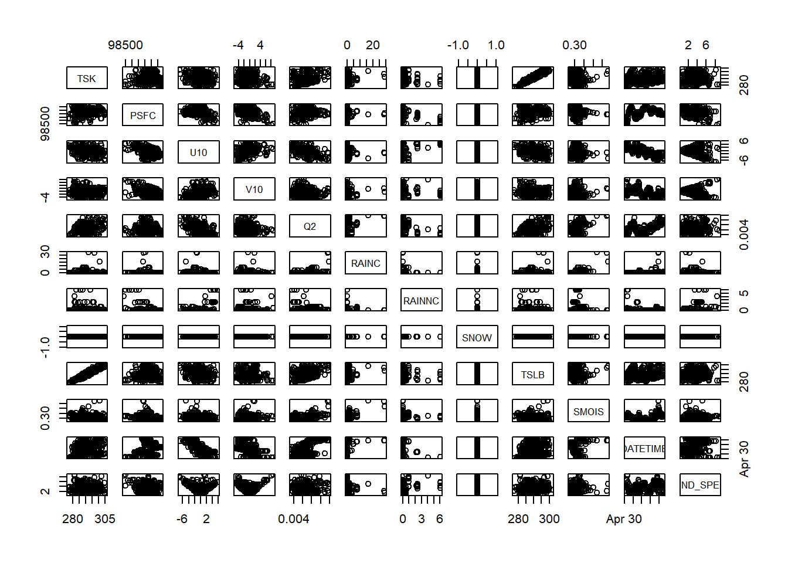
The output of the image above shows a pairplot. A pairplot is a type of visualization in data analysis that displays pairwise relationships between variables in a dataset. It is typically used to explore the relationships between multiple numerical variables and identify patterns or correlations between them
ggplot(data_weather, aes(x = TSK)) +
geom_histogram(binwidth = 0.5, fill = "skyblue", color = "black") +
labs(title = "Histogram of Surface Temperature", x = "Surface Temperature", y = "Frequency")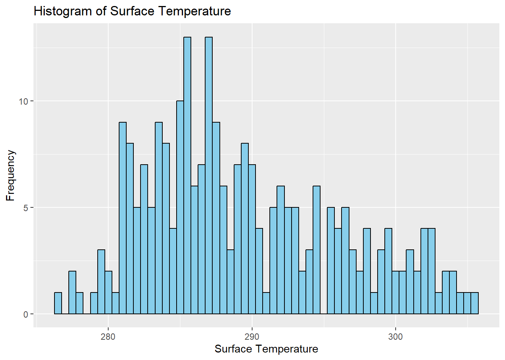
# Checking the skewness and Kurtosis of TSK
print(paste("The value of the skewness is: ", skewness(data_weather$TSK)))## [1] "The value of the skewness is: 0.533322159485486"kurtosis_TSK<- kurtosis(data_weather$TSK, na.rm = TRUE)
print(paste("The value of the kurtosis is:", kurtosis_TSK))## [1] "The value of the kurtosis is: -0.61823558112505"From the result above it can be seen that the distribution is moderately right skewed and the kurtosis is platykurtic.
ggplot(data_weather, aes(x = PSFC)) +
geom_histogram(binwidth = 30, fill = "skyblue", color = "black") +
labs(title = "Histogram of Surface Pressure", x = "Surface Pressure", y = "Frequency")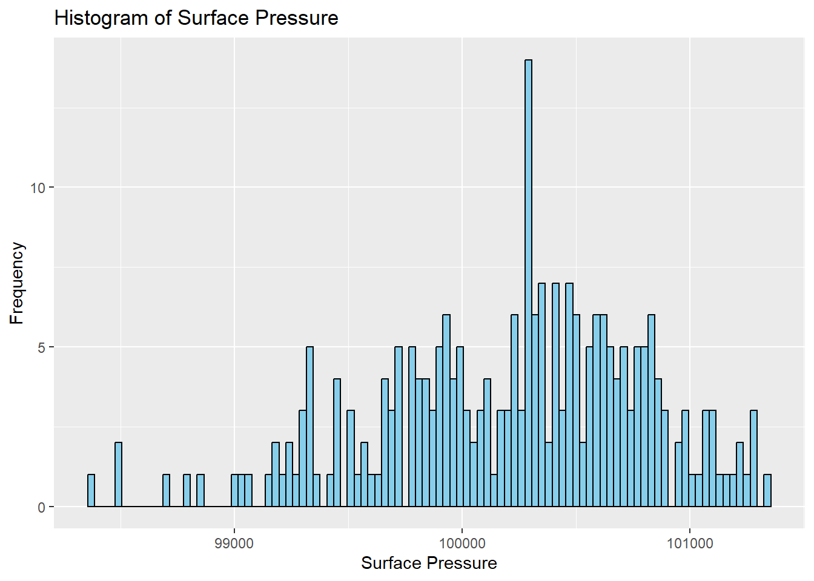
# Checking the skewness and Kurtosis of PSFC
print(paste("The value of the skewness is: ", skewness(data_weather$PSFC)))## [1] "The value of the skewness is: -0.541823171496961"kurtosis_PSFC<- kurtosis(data_weather$PSFC, na.rm = TRUE)
print(paste("The value of the kurtosis is:", kurtosis_PSFC))## [1] "The value of the kurtosis is: 0.0660054967303383"From the distribution of the surface pressure, it can be seen that it is left skewed and it has a low kurtosis.
ggplot(data_weather, aes(x = WIND_SPEED)) +
geom_histogram(binwidth = 0.5, fill = "skyblue", color = "black") +
labs(title = "Histogram of Wind Speed", x = "Wind Speed", y = "Frequency")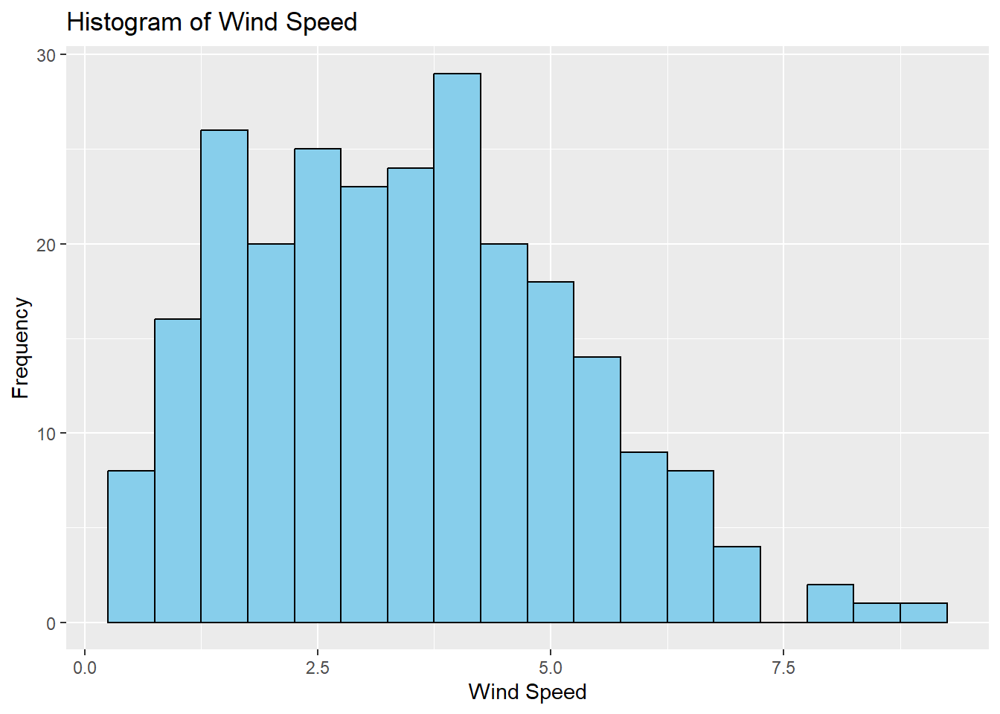
# Checking the skewness and Kurtosis of Wind Speed
print(paste("The value of the skewness is: ", skewness(data_weather$WIND_SPEED)))## [1] "The value of the skewness is: 0.435459611882918"kurtosis_WINDSPEED<- kurtosis(data_weather$WIND_SPEED, na.rm = TRUE)
print(paste("The value of the kurtosis is:", kurtosis_WINDSPEED))## [1] "The value of the kurtosis is: -0.260091385888312"From the above, the distribution is right skewed with a low kurtosis
ggplot(data_weather, aes(x = RAINNC)) +
geom_histogram(binwidth = 0.5, fill = "skyblue", color = "black") +
labs(title = "Non-convective Rain", x = "Non-Convective Rain", y = "Frequency")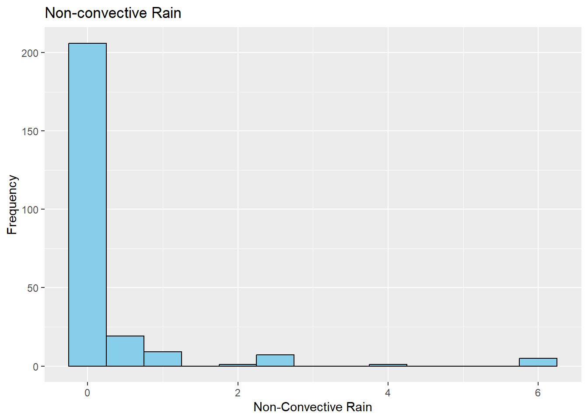
# Checking the skewness and Kurtosis of RAINNC
print(paste("The value of the skewness is: ", skewness(data_weather$RAINNC)))## [1] "The value of the skewness is: 4.65614679109489"kurtosis_RAINNC<- kurtosis(data_weather$RAINNC, na.rm = TRUE)
print(paste("The value of the kurtosis is:", kurtosis_RAINNC))## [1] "The value of the kurtosis is: 22.8750348574582"From the distribution, it can be seen that it is highly right skewed with a very high kurtosis.
ggplot(data_weather, aes(x = TSLB)) +
geom_histogram(binwidth = 1, fill = "skyblue", color = "black") +
labs(title = "Soil Temperature", x = "Soil Temperature", y = "Frequency")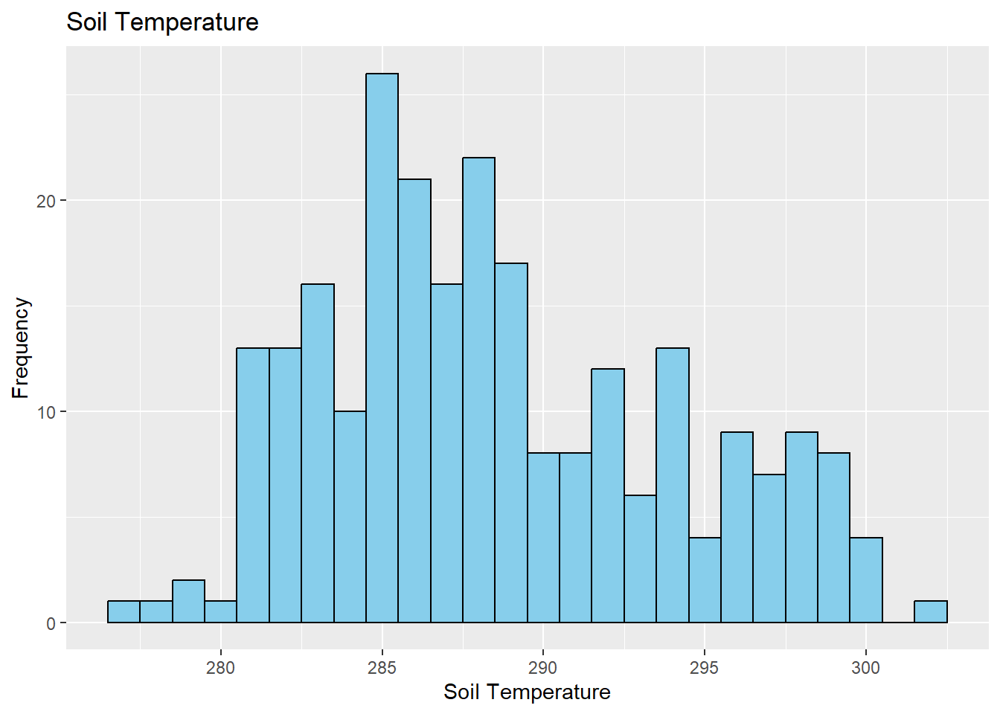
# Checking the skewness and Kurtosis of TSLB
print(paste("The value of the skewness is: ", skewness(data_weather$TSLB)))## [1] "The value of the skewness is: 0.431540397937841"kurtosis_TSLB<- kurtosis(data_weather$TSLB, na.rm = TRUE)
print(paste("The value of the kurtosis is:", kurtosis_TSLB))## [1] "The value of the kurtosis is: -0.694589843195905"From the distribution above, it shows it is moderately right skewed with low kurtosis
ggplot(data_weather, aes(x = Q2)) +
geom_histogram(binwidth = 0.1, fill = "skyblue", color = "black") +
labs(title = "2-meter specific humidity", x = "2-meter specific humidity", y = "Frequency")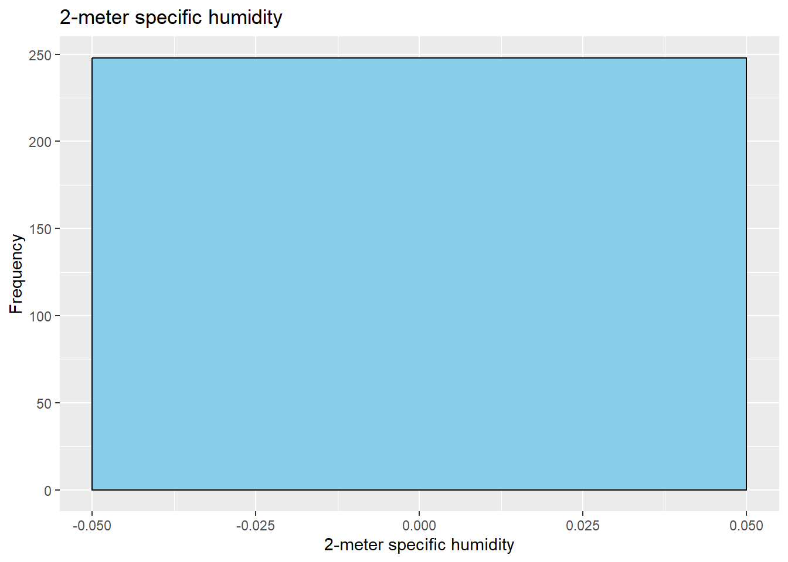
# Checking the skewness and Kurtosis of TSK
print(paste("The value of the skewness is: ", skewness(data_weather$Q2)))## [1] "The value of the skewness is: 0.427756009195485"kurtosis_Q2<- kurtosis(data_weather$Q2, na.rm = TRUE)
print(paste("The value of the kurtosis is:", kurtosis_Q2))## [1] "The value of the kurtosis is: -0.250490989692109"Here, although the distribution can not be visually recognised, from the skewness and kurtosis calculations, we can say that the distribution is moderately right skewed with a relatively low kurtosis
#Boxplot for Skin temperature
ggplot(data_weather, aes(y = TSK)) +
geom_boxplot(outlier.color = 'red') +
labs(title = "Skin Temperature") 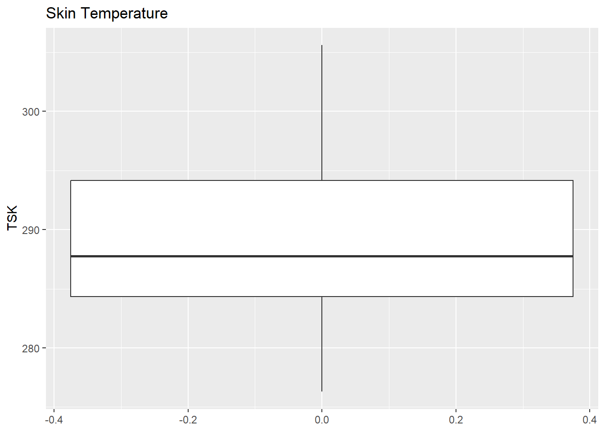
#Boxplot for surface pressure
ggplot(data_weather, aes(y = PSFC)) +
geom_boxplot(outlier.color = "red") +
labs(title = "Surface Pressure")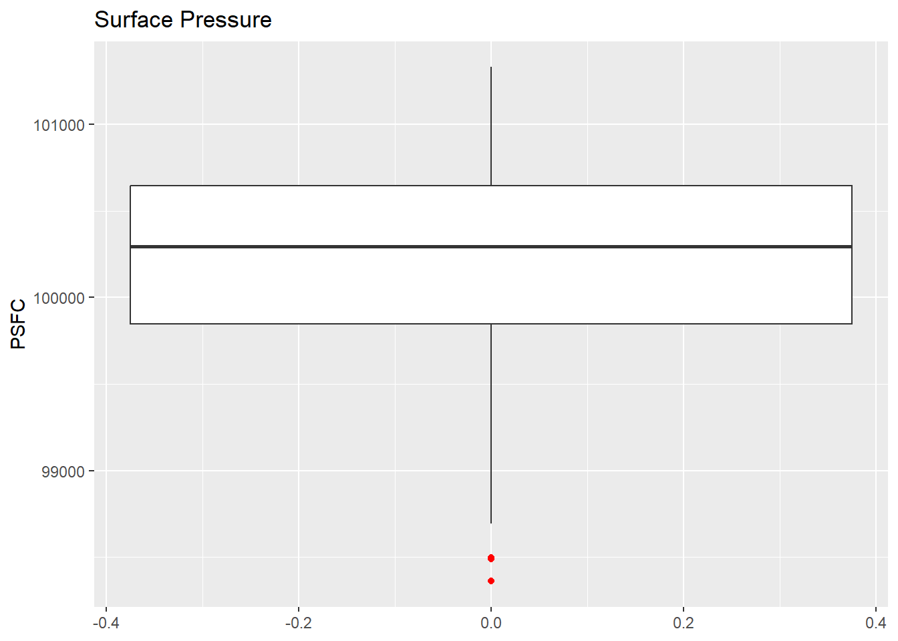
#Print the outliers
Outlier_Psfc <- data_weather$PSFC
z_scores <- scale(Outlier_Psfc)
threshold <- 2
outliers <- Outlier_Psfc[abs(z_scores) > threshold]
print(outliers)## [1] 99018 98863 98694 98497 98362 98490 98779 99014#Boxplot for 2-meter specific humidity
ggplot(data_weather, aes(y = Q2)) +
geom_boxplot(outlier.colour = "red") +
labs(title = "2-meter specific humidity")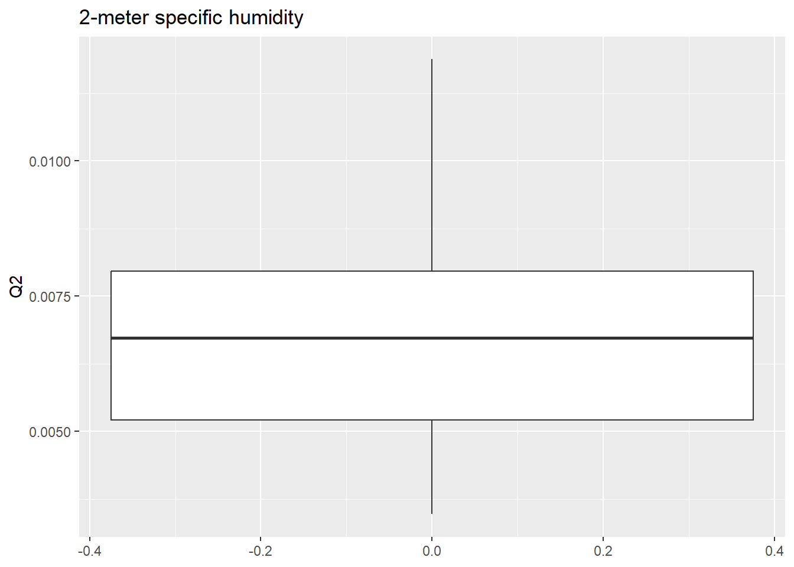
ggplot(data_weather, aes(y = WIND_SPEED)) +
geom_boxplot(outlier.colour = "red") +
labs(title = "Wind Speed")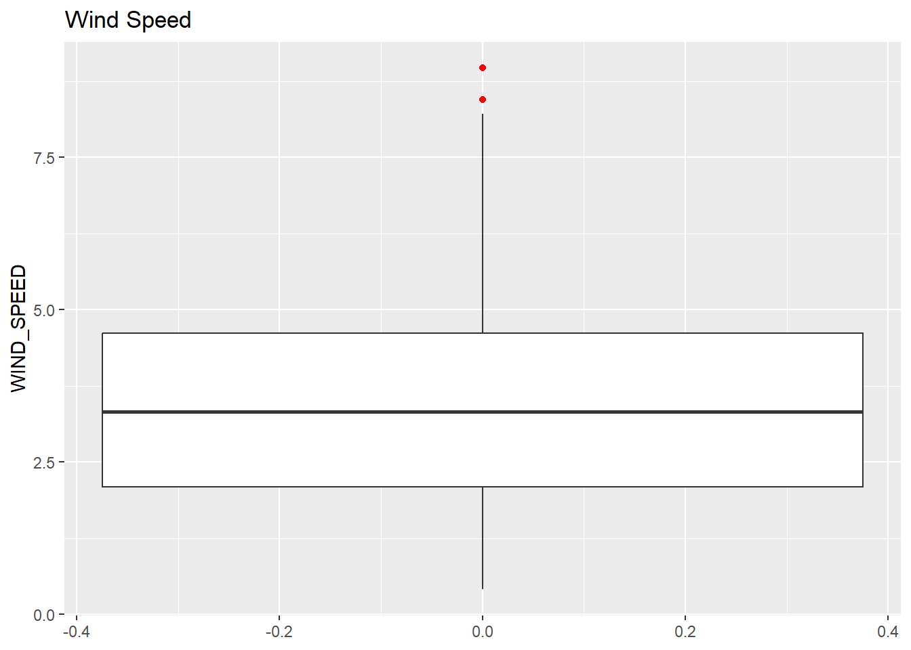
#Print the outliers
Outlier_Wind <- data_weather$WIND_SPEED
z_scores <- scale(Outlier_Wind)
threshold <- 2
outliers <- Outlier_Wind[abs(z_scores) > threshold]
print(outliers)## [1] 8.97 8.45 8.22 7.84 7.16ggplot(data_weather, aes(y = TSLB)) +
geom_boxplot(outlier.colour = "red") +
labs(title = "Soil Temperature")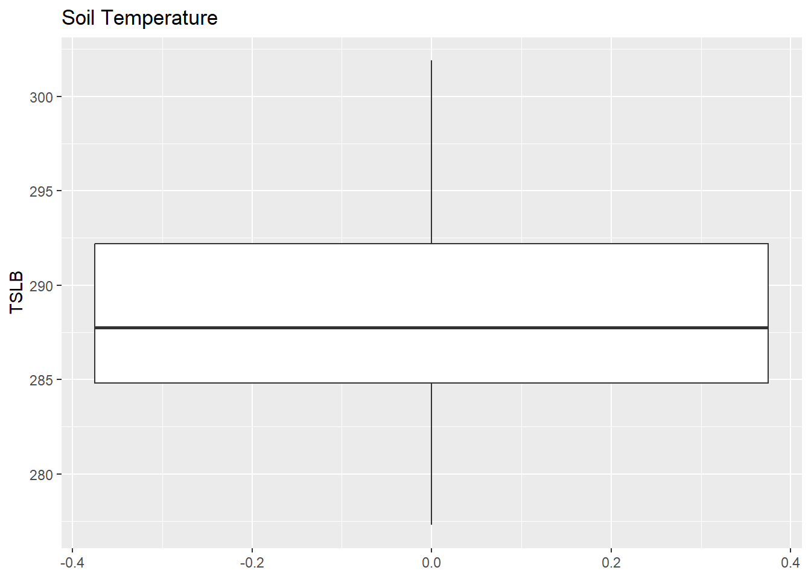
Upon careful inspection of the outliers and comparing it to our available dataset, it was deduced that the outliers are valid data points. Outliers don’t necessarily mean errors. In some cases, they might represent genuine but rare events or observations within the data set.
Line plots are a basic tool for visualising data trends across a continuous variable. By displaying how a specific variable changes over time or different categories, line plots provide a clear and concise method for communicating complex information effectively.
#Lineplot to see the trend of the Wind Speed variable over 30 days
ggplot(data_weather, aes(x = DATETIME, y = WIND_SPEED)) +
geom_line(color = 'blue', linewidth = 1.0) +
labs(x = "Datetime", y = "Wind Speed") +
ggtitle("Trend of Wind Speed Over Time")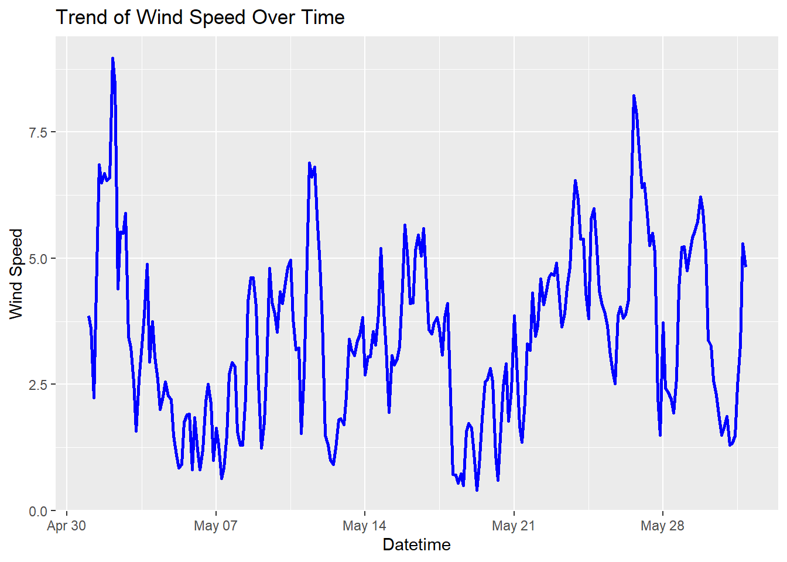
#Lineplot to see the trend of Surface temperature variable over 30 days
ggplot(data_weather, aes(x = DATETIME, y = TSK)) +
geom_line(color = 'blue', linewidth = 1.0) +
labs(x = "Datetime", y = "Surface temperature") +
ggtitle("Trend of Surface Temperature Over Time")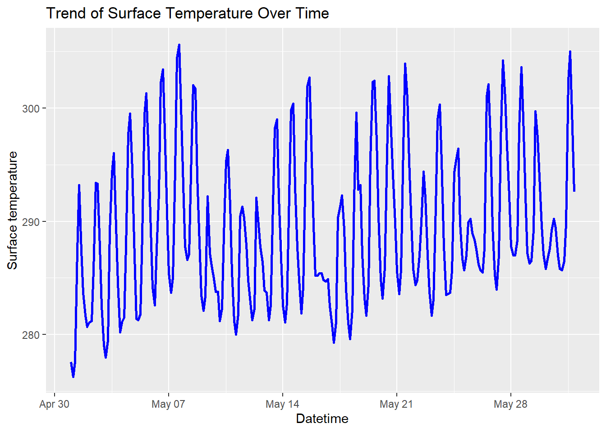
#Lineplot to see the trend of the Surface pressure variable over 30 days
ggplot(data_weather, aes(x = DATETIME, y = PSFC)) +
geom_line(color = 'blue', linewidth = 1.0) +
labs(x = "Datetime", y = "Surface pressure") +
ggtitle("Trend of Surface pressure Over Time")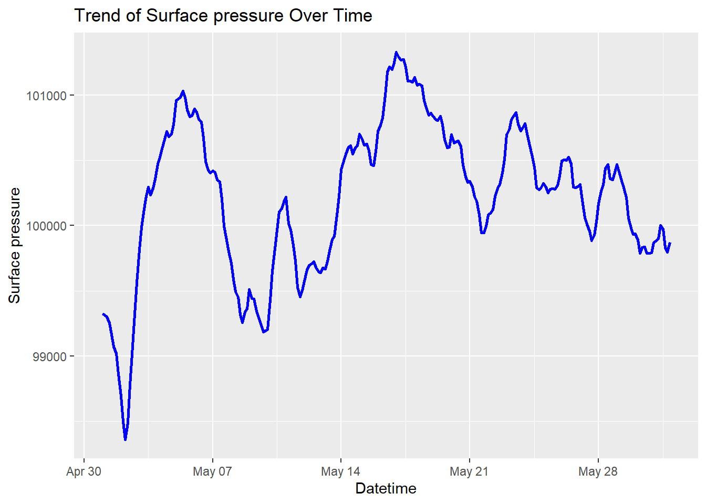
#Lineplot to see the trend of the Non-convective rain variable over 30 days
ggplot(data_weather, aes(x = DATETIME, y = RAINNC)) +
geom_line(color = 'blue', linewidth = 1.0) +
labs(x = "Datetime", y = "Non-convective rain") +
ggtitle("Trend of Non-convective rain Over Time")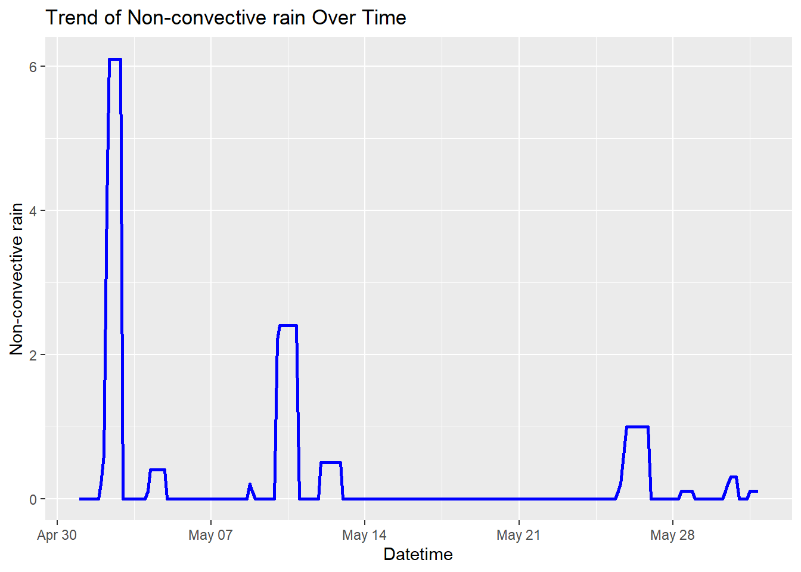
#Lineplot to see the trend of 2-meter specific humidity variable over 30 days
ggplot(data_weather, aes(x = DATETIME, y = Q2)) +
geom_line(color = 'blue', linewidth = 1.0) +
labs(x = "Datetime", y = "2-meter specific humidity") +
ggtitle("Trend of 2-meter specific humidity Over Time")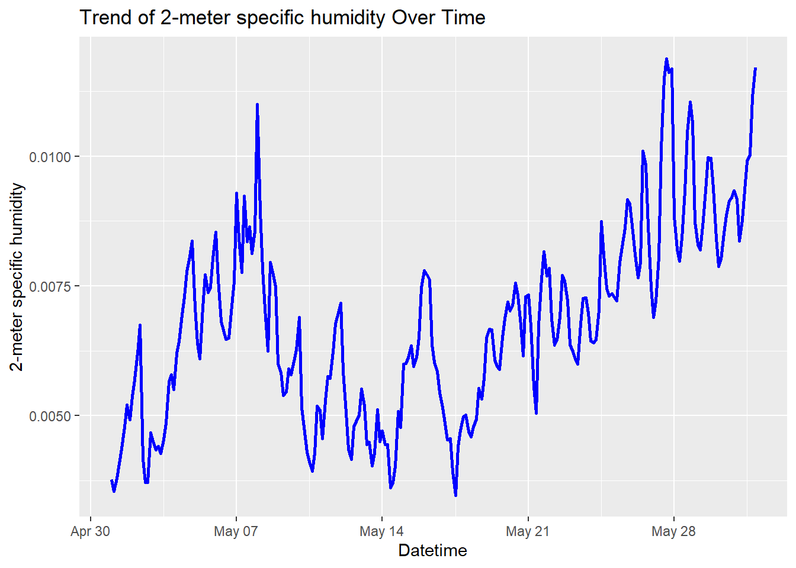
What is the average distribution of surface temperature across the dataset?
Finding the distribution of the surface temperature across a thirty-day time period helps to determine a baseline.
1a.) Null Hypothesis (H0) : There is no significant difference in surface temperature
1b.) Alternative Hypothesis (H1) : Surface temperature significantly differs from the mean temperature.
#Showing the summary statistics
summary(data_weather$TSK)## Min. 1st Qu. Median Mean 3rd Qu. Max.
## 276.3 284.4 287.8 289.4 294.1 305.6The result above shows the summary description of the surface temperature variable. It shows that the mean surface temperature across the 30 day time period was 289.4
#Plotting the Histogram
ggplot(data_weather, aes(x = TSK)) +
geom_histogram(binwidth = 0.5, fill = "skyblue", color = "black") +
labs(title = "Histogram of Surface Temperature", x = "Surface Temperature", y = "Frequency")The histogram shows the visual distribution of the Surface temperature variable. It shows the peak value of the surface at around the 289 mark. The distribution is right skewed.
#Getting a reference value
reference_value <- mean(data_weather$TSK)
#Performing one-sample t-test
t_testResult <- t.test(data_weather$TSK, mu = reference_value)
print(t_testResult)##
## One Sample t-test
##
## data: data_weather$TSK
## t = 0, df = 247, p-value = 1
## alternative hypothesis: true mean is not equal to 289.4167
## 95 percent confidence interval:
## 288.5794 290.2540
## sample estimates:
## mean of x
## 289.4167The result above shows a p-value that is equal to 1. Since it is greater than 0.05, this indicates that there is no evidence to reject the null hypothesis. In other words, the test does not find any significant difference or effect. The null hypothesis being that there is no significant difference in the mean surface temperature. We then accept the null hypothesis.
#Test for Normality
shapiro.test(data_weather$TSK)##
## Shapiro-Wilk normality test
##
## data: data_weather$TSK
## W = 0.95543, p-value = 6.373e-07From the above, a p-value less than 0.05 suggests that we can confidently reject the null hypothesis. It means there’s no evidence to suggest the data deviates from normality. In this case, the data shows a non-normal distribution.
How does Wind Speed have an influence on the surface pressure?
2a.) Null Hypothesis (H0): There is no relationship between wind speed and surface pressure.
2b.) Alternative Hypothesis (H1): There is a relationship between wind speed and surface pressure.
The two variables needed are Wind Speed and Surface Pressure
#First a scatterplot to show the relationship
ggplot(data_weather, aes(x = WIND_SPEED, y = PSFC)) +
geom_point(alpha = 5) +
labs(x = "Wind Speed", y = "PSFC") +
ggtitle("Scatterplot of Wind Speed vs Surface Pressure")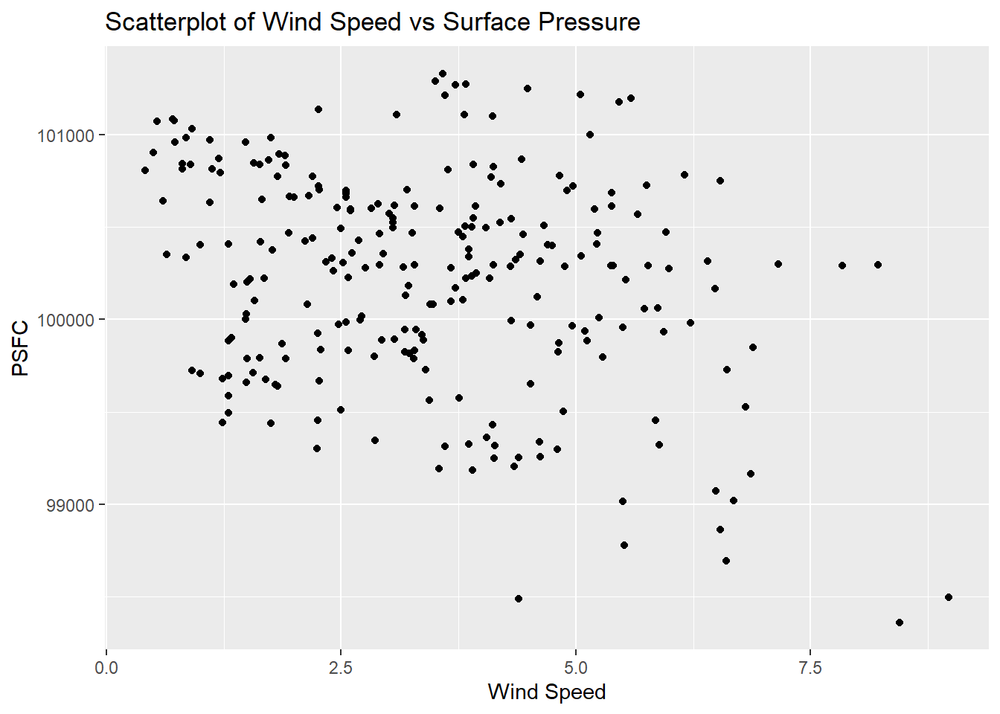
To determine the correlation coefficient that would be used to check the relationship, the distribution of the two variables have to be checked to determine whether the Pearson, Spearman or Kendall correlation function would be used. Although they perform similar tasks they have differing assumptions.
When analyzing the relationship between two variables, Pearson correlation is best suited for assessing linear relationships between continuous variables that follow a normal distribution. On the other hand, Spearman correlation is more appropriate for assessing monotonic relationships, especially when the relationship is nonlinear or the data are not normally distributed.
#Test for normality for Wind Speed
shapiro.test(data_weather$WIND_SPEED)##
## Shapiro-Wilk normality test
##
## data: data_weather$WIND_SPEED
## W = 0.97676, p-value = 0.000436#Test for normality for Surface Pressure
shapiro.test(data_weather$PSFC)##
## Shapiro-Wilk normality test
##
## data: data_weather$PSFC
## W = 0.97703, p-value = 0.0004799From the output above the p-value from both normality tests is seen to be less than 0.05. This shows that the distribution is not normally distributed. This then eliminates the need for pearson correlation coefficient. A non parametric test called “Spearman” correlation would be used.
#Spearman correlation
cor(data_weather$WIND_SPEED, data_weather$PSFC, method = "spearman")## [1] -0.2106213#Spearman correlation
rcorr(data_weather$WIND_SPEED, data_weather$PSFC, type = 'spearman')## x y
## x 1.00 -0.21
## y -0.21 1.00
##
## n= 248
##
##
## P
## x y
## x 8e-04
## y 8e-04From the result of the correlation tests above, it shows a weak negative correlation between the two variables.
#Spearman correlation using corr.test
cor.test(data_weather$WIND_SPEED, data_weather$PSFC, method = 'spearman')## Warning in cor.test.default(data_weather$WIND_SPEED, data_weather$PSFC, :
## Cannot compute exact p-value with ties##
## Spearman's rank correlation rho
##
## data: data_weather$WIND_SPEED and data_weather$PSFC
## S = 3077549, p-value = 0.000845
## alternative hypothesis: true rho is not equal to 0
## sample estimates:
## rho
## -0.2106213The p-value from this test is less than 0.05. This indicates that the null hypothesis, which states that there is no correlation between the two variables, can be rejected at a confidence level of 95%. Therefore, it can be concluded that there exists a statistically significant association between the two variables.
How do skin temperature, surface pressure and specific humidity collectively influence convective rainfall and what is the nature of their combined effects? Is there evidence of collaborative or opposing relationships among these factors?
3a.) Null Hypothesis: There is no significant relationship between the combined effects of skin temperature, surface pressure and specific humidity on convective rainfall.
3b.) Alternative Hypothesis: There is a significant relationship between the combined effects of skin temperature, surface pressure and specific humidity on convective rainfall
#Plotting a pairwise scatterplot to show relationship between the variables
pairs(data_weather[, c("TSK", "PSFC", "Q2", "RAINC")])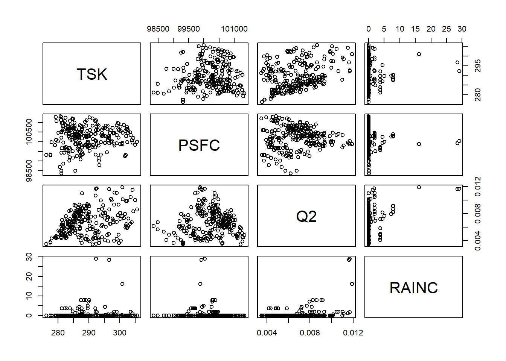
The plot above shows the pair relationship between each variable using a scatter plot.
#Using a multiple regression model
Multi_model <- lm(RAINC ~ TSK + PSFC + Q2, data = data_weather)
summary(Multi_model)##
## Call:
## lm(formula = RAINC ~ TSK + PSFC + Q2, data = data_weather)
##
## Residuals:
## Min 1Q Median 3Q Max
## -3.3630 -1.0927 -0.3981 0.3783 25.5420
##
## Coefficients:
## Estimate Std. Error t value Pr(>|t|)
## (Intercept) 4.631e+01 3.212e+01 1.442 0.151
## TSK -8.112e-03 2.918e-02 -0.278 0.781
## PSFC -4.691e-04 3.157e-04 -1.486 0.139
## Q2 5.605e+02 1.053e+02 5.326 2.28e-07 ***
## ---
## Signif. codes: 0 '***' 0.001 '**' 0.01 '*' 0.05 '.' 0.1 ' ' 1
##
## Residual standard error: 2.886 on 244 degrees of freedom
## Multiple R-squared: 0.1188, Adjusted R-squared: 0.108
## F-statistic: 10.96 on 3 and 244 DF, p-value: 8.841e-07From the result of the regression test,
1.) A positive coefficient for Q2 suggests a positive relationship with Rainc (higher humidity leads to higher rain).
2.) A negative coefficient for PSFC and TSK indicates a negative relationship (higher pressure and higher temperature leads to lower rain).
But overall, the p-value is seen to be less than 0.05. Therefore, the null hypothesis is rejected. This then signifies that there is a significant relationship between the combined factors.
# Heatmap for Multivariate analysis
correlation_matrix <- cor(data_weather[c("TSK","PSFC", "Q2","RAINC")])
corrplot(correlation_matrix, method = "color")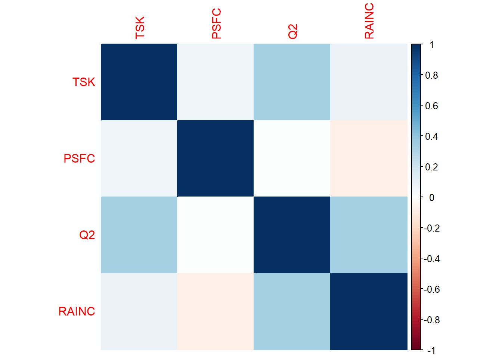
The heat map shows the positive or negative correlation between each variable
plot(Multi_model)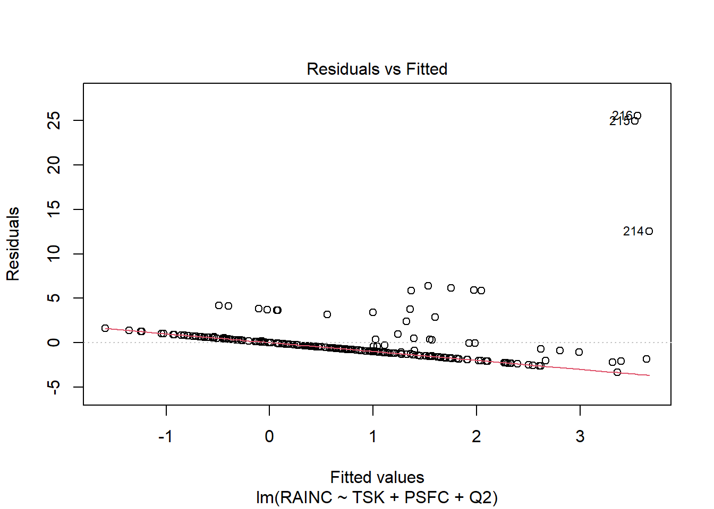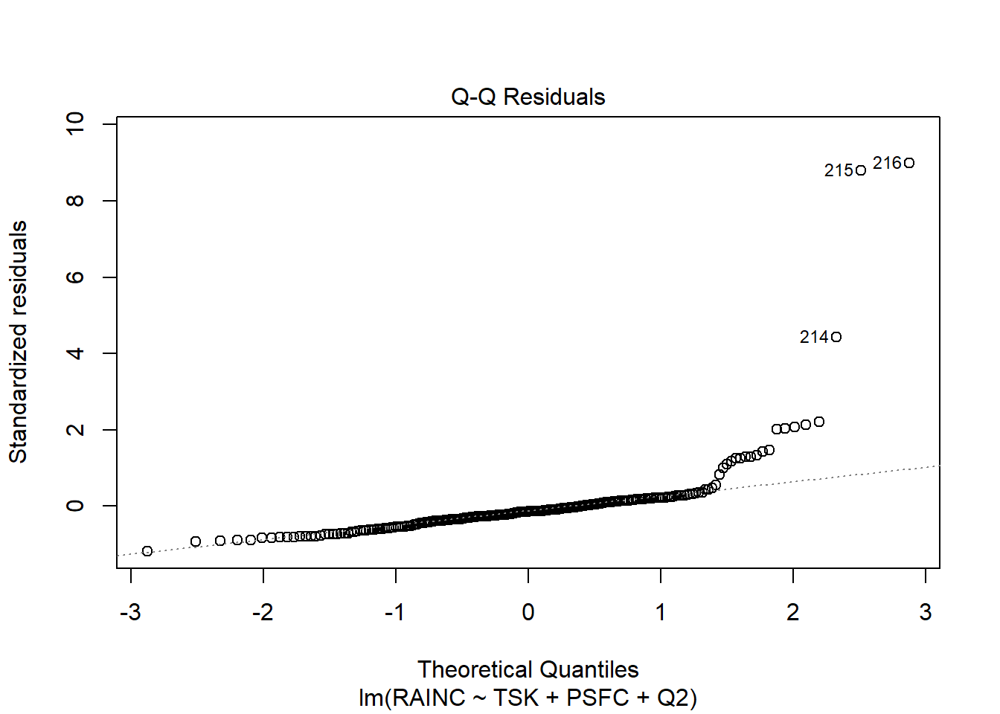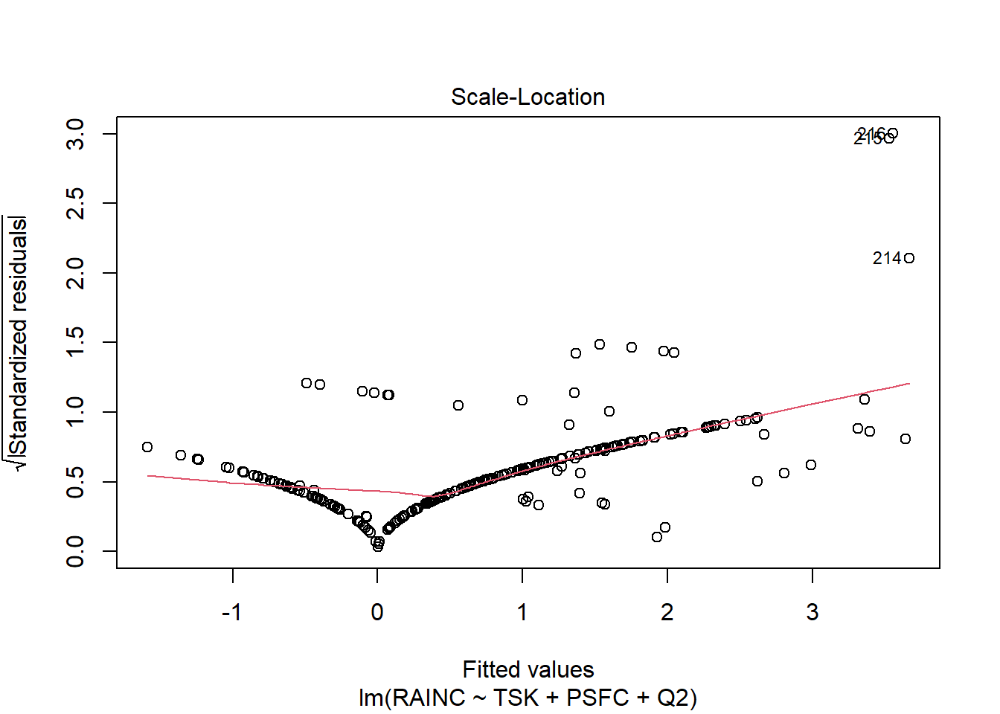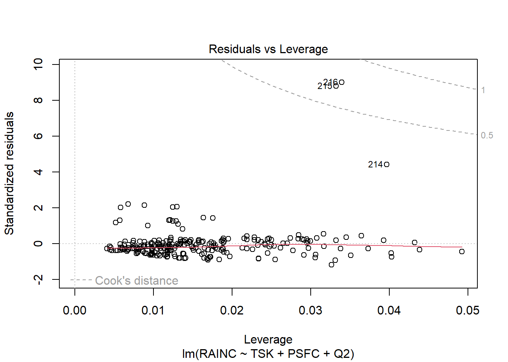
1.) Residuals vs Fitted: This plot verifys the assumptions of linearity. When the residuals exhibit an equal spread around the horizontal line without noticeable patterns, it strongly implies the presence of a linear relationship.
2.) Normal Q-Q: This plot verifys the assumption of normality regarding residuals. If the majority of residuals closely adhere to the straight dashed line, then the assumption is satisfied.
3.) Scale-Location: This plot is utilized to examine the homoscedasticity of residuals, ensuring that their variance remains constant. When the residuals are evenly distributed along the straight line, it confirms homoscedasticity. It suggests that the model meets an important assumption of linear regression and doesn’t exhibit a systematic bias in its residuals.
Residuals vs Leverage: This visualization is employed to detect any influential values present within the dataset.
Generalized Additive Models (GAMs): GAMs allow for non-linear relationships between predictor variables and the outcome variable by using flexible spline functions. This can capture non-linear patterns in the data more effectively than traditional linear regression models.
library(gam)## Warning: package 'gam' was built under R version 4.3.3## Loading required package: splines## Loading required package: foreach## Warning: package 'foreach' was built under R version 4.3.3##
## Attaching package: 'foreach'## The following objects are masked from 'package:purrr':
##
## accumulate, when## Loaded gam 1.22-3model_gam <- gam(RAINC ~ s(TSK) + s(PSFC) + s(Q2), data = data_weather)
# Summary of the GAM
summary(model_gam)##
## Call: gam(formula = RAINC ~ s(TSK) + s(PSFC) + s(Q2), data = data_weather)
## Deviance Residuals:
## Min 1Q Median 3Q Max
## -9.41901 -0.66130 -0.28397 0.09421 18.13149
##
## (Dispersion Parameter for gaussian family taken to be 5.8639)
##
## Null Deviance: 2306.743 on 247 degrees of freedom
## Residual Deviance: 1378.013 on 234.9997 degrees of freedom
## AIC: 1157.107
##
## Number of Local Scoring Iterations: NA
##
## Anova for Parametric Effects
## Df Sum Sq Mean Sq F value Pr(>F)
## s(TSK) 1 2.75 2.752 0.4693 0.4940
## s(PSFC) 1 3.05 3.051 0.5204 0.4714
## s(Q2) 1 219.10 219.101 37.3643 4.044e-09 ***
## Residuals 235 1378.01 5.864
## ---
## Signif. codes: 0 '***' 0.001 '**' 0.01 '*' 0.05 '.' 0.1 ' ' 1
##
## Anova for Nonparametric Effects
## Npar Df Npar F Pr(F)
## (Intercept)
## s(TSK) 3 2.185 0.09048 .
## s(PSFC) 3 0.936 0.42393
## s(Q2) 3 34.466 < 2e-16 ***
## ---
## Signif. codes: 0 '***' 0.001 '**' 0.01 '*' 0.05 '.' 0.1 ' ' 1Polynomial regression is a statistical method employed to depict the connection between a dependent variable and one or more independent variables. In contrast to linear regression, which presumes a linear relationship between variables, polynomial regression accommodates curved relationships by applying a polynomial equation to the dataset.
#Polynomial Regression Model
model_polynomial <- lm(RAINC ~ poly(TSK, 2) + poly(PSFC, 2) + poly(Q2, 2), data = data_weather)
# Summary of the polynomial regression model
summary(model_polynomial)##
## Call:
## lm(formula = RAINC ~ poly(TSK, 2) + poly(PSFC, 2) + poly(Q2,
## 2), data = data_weather)
##
## Residuals:
## Min 1Q Median 3Q Max
## -6.9876 -0.8250 -0.0815 0.3237 20.3626
##
## Coefficients:
## Estimate Std. Error t value Pr(>|t|)
## (Intercept) 0.7387 0.1661 4.448 1.32e-05 ***
## poly(TSK, 2)1 -4.2381 2.8527 -1.486 0.1387
## poly(TSK, 2)2 -5.1855 2.6739 -1.939 0.0536 .
## poly(PSFC, 2)1 -0.6023 2.6737 -0.225 0.8220
## poly(PSFC, 2)2 -1.5318 2.8413 -0.539 0.5903
## poly(Q2, 2)1 16.1817 2.9212 5.539 7.93e-08 ***
## poly(Q2, 2)2 20.0196 2.7160 7.371 2.70e-12 ***
## ---
## Signif. codes: 0 '***' 0.001 '**' 0.01 '*' 0.05 '.' 0.1 ' ' 1
##
## Residual standard error: 2.615 on 241 degrees of freedom
## Multiple R-squared: 0.2854, Adjusted R-squared: 0.2676
## F-statistic: 16.04 on 6 and 241 DF, p-value: 1.632e-15From the output of the non parametric tests carried out on the the variables, we come to the same conclusion that the p-value for the 2-meter specific humidity (Q2) indicates a very high statistical significance.
Can a machine learning model be used to predict wind based on other weather variables such as wind speed, soil moisture, soil temperature and can future wind speed valued be determined?
Firstly we have to determine which features to select. By examining the correlation matrix and heatmap, we can identify pairs of variables that are strongly correlated with each other.
#Using a correlation heatmap to choose our features
correlation_matrix <- cor(data_weather[c("TSK","PSFC", "Q2","RAINC", "RAINNC", "WIND_SPEED","TSLB", "SMOIS")])
corrplot(correlation_matrix, method = "color")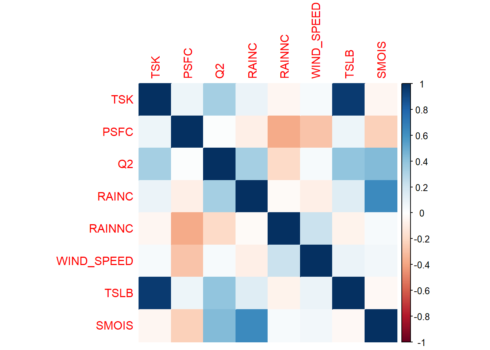
print(correlation_matrix)## TSK PSFC Q2 RAINC RAINNC
## TSK 1.00000000 0.07258824 0.33452704 0.08934593 -0.04836348
## PSFC 0.07258824 1.00000000 0.01777472 -0.08478108 -0.37261282
## Q2 0.33452704 0.01777472 1.00000000 0.33209435 -0.19238844
## RAINC 0.08934593 -0.08478108 0.33209435 1.00000000 -0.02627175
## RAINNC -0.04836348 -0.37261282 -0.19238844 -0.02627175 1.00000000
## WIND_SPEED 0.03081705 -0.28001601 0.03490304 -0.08217076 0.21013556
## TSLB 0.95271391 0.07388285 0.39350572 0.13366760 -0.06648146
## SMOIS -0.04881301 -0.23655377 0.43582011 0.63234399 0.03751657
## WIND_SPEED TSLB SMOIS
## TSK 0.03081705 0.95271391 -0.04881301
## PSFC -0.28001601 0.07388285 -0.23655377
## Q2 0.03490304 0.39350572 0.43582011
## RAINC -0.08217076 0.13366760 0.63234399
## RAINNC 0.21013556 -0.06648146 0.03751657
## WIND_SPEED 1.00000000 0.08881935 0.05194064
## TSLB 0.08881935 1.00000000 -0.03941878
## SMOIS 0.05194064 -0.03941878 1.00000000From the result above, positive correlations are displayed in the blue color gradient, while negative correlations are displayed in brown. The stronger the correlation, the darker the color. It can be deduced that the “PSF” and “RAINC” variables gave a negative correlation. Therefore they would not be chosen as part of our features for prediction
#Firstly we check whether linear regression would be suitable for this scenario
data_sub <- data_weather[c("TSK", "Q2", "RAINNC", "WIND_SPEED","TSLB", "SMOIS")]
glimpse(data_sub)## Rows: 248
## Columns: 6
## $ TSK <dbl> 277.6, 276.3, 277.6, 287.4, 293.2, 287.4, 283.7, 281.7, 280…
## $ Q2 <dbl> 0.003770, 0.003540, 0.003800, 0.004085, 0.004370, 0.004790,…
## $ RAINNC <dbl> 0.0, 0.0, 0.0, 0.0, 0.0, 0.0, 0.0, 0.0, 0.2, 0.6, 4.1, 6.1,…
## $ WIND_SPEED <dbl> 3.86, 3.61, 2.24, 4.39, 6.86, 6.49, 6.68, 6.54, 6.60, 8.97,…
## $ TSLB <dbl> 278.90, 277.60, 277.30, 283.20, 289.40, 287.90, 284.80, 282…
## $ SMOIS <dbl> 0.3123, 0.3103, 0.3088, 0.3073, 0.3060, 0.3049, 0.3038, 0.3…This is an extraction of the variables that would be used to build out the machine learning models. PSFC and RAINC were omitted as they gave a negative correlation.
#Define the model
Model_Wind <- WIND_SPEED ~ TSK + Q2+ RAINNC + TSLB + SMOIS
#Fitting the model
Linear_Wind <- lm(Model_Wind, data = data_sub)
#Performing rainbow test
rainbowTest <- raintest(Linear_Wind)
#Checking the p-value
rainbowTest$p.value## [1] 0.008197042From the above the p-value is less than 0.05, this suggests the linear model does not capture the entire relationship, therefore we would be exploring other non-linear models.
glimpse(data_sub)## Rows: 248
## Columns: 6
## $ TSK <dbl> 277.6, 276.3, 277.6, 287.4, 293.2, 287.4, 283.7, 281.7, 280…
## $ Q2 <dbl> 0.003770, 0.003540, 0.003800, 0.004085, 0.004370, 0.004790,…
## $ RAINNC <dbl> 0.0, 0.0, 0.0, 0.0, 0.0, 0.0, 0.0, 0.0, 0.2, 0.6, 4.1, 6.1,…
## $ WIND_SPEED <dbl> 3.86, 3.61, 2.24, 4.39, 6.86, 6.49, 6.68, 6.54, 6.60, 8.97,…
## $ TSLB <dbl> 278.90, 277.60, 277.30, 283.20, 289.40, 287.90, 284.80, 282…
## $ SMOIS <dbl> 0.3123, 0.3103, 0.3088, 0.3073, 0.3060, 0.3049, 0.3038, 0.3…First our data is split into train and test sets. The model is fed the train set to learn from to then make on the test set.
set.seed(123) #Ensuring reproducibility
#Getting the split
split = sample.split(data_sub$WIND_SPEED, SplitRatio = 2/3)
#Dividing into train and test set
train_set = subset(data_sub, split == TRUE)
test_set = subset(data_sub, split == FALSE)View(train_set)
View(test_set)
nrow(train_set) #Dsiplay the number of rows the train set## [1] 165#Display the number of rows in the test set
nrow(test_set)## [1] 83To ensure that the independent variables or features in a dataset are on a similar scale, a preprocessing technique called feature scaling is used in machine learning. This technique involves transforming the values of the features so that they fall within a range, which is often between 0 and 1 or with a mean of 0 and a standard deviation of 1.
# Applying feature Scaling
training_set = scale(train_set)
testing_set = scale(test_set)
#Building the model
Svr_Wind <- svm(formula <- WIND_SPEED ~ ., data <- training_set,
type <- 'eps-regression')From the code block above, the train and test set of the SVR is scaled. It requires scaling because it is sensitive to the scale of the input features.
This involves testing the support vector regression model on the test set to see its predictions
# Predict wind speed on testing data
y_pred <- predict(Svr_Wind, testing_set)
y_pred## 2 4 5 8 11 13
## -0.37588189 -0.20116276 -0.19076999 0.15393226 0.65106589 1.06520492
## 16 20 21 22 24 25
## 0.93264315 -0.16547212 -0.10773647 -0.13506149 0.43414870 -0.30025288
## 26 31 32 33 34 37
## -0.29985512 -0.08049900 0.05349282 -0.20405540 -0.21200058 -0.87347695
## 50 53 58 59 61 65
## -0.30024607 -0.59447796 -0.42296331 -0.05990120 -0.62090590 0.39361344
## 67 68 69 71 73 82
## 0.23947215 -0.27641142 0.42593250 0.47497880 0.48435752 -0.05790049
## 84 87 88 89 94 97
## -0.09120850 0.31595070 0.27592279 0.12239497 0.18280013 0.25175327
## 104 106 107 111 114 115
## 0.37072312 0.13679586 0.14051110 -0.19869121 0.35098532 0.26877009
## 118 126 130 132 133 134
## -0.41740026 0.49850241 0.09893749 -0.14280694 -0.07509442 -0.23013372
## 136 137 138 139 145 150
## 0.58202962 0.34789671 0.25899850 0.26803510 0.47044362 -0.40558408
## 151 167 173 174 175 179
## -0.48383121 0.02998213 -0.02723797 -0.59111888 -0.25948258 0.38402211
## 181 183 189 190 193 195
## -0.89278170 -0.41418468 -0.81702689 -0.12744448 0.38071304 0.25629567
## 198 202 206 214 216 219
## -0.10424598 0.32417458 0.52630007 -0.39508351 0.06505709 0.37077916
## 220 222 223 224 229 230
## 0.19022163 0.39272573 0.67527573 0.10726098 -0.40384842 0.07077143
## 238 240 242 246 248
## -0.37277731 -0.42480113 -0.15058171 -0.15652182 0.17146297#Changing the scaled train and test set to dataframes
testing_set1 <- data.frame(testing_set)
training_set1 <- data.frame(training_set)These were converted to dataframes to make it easier to calculate the required evaluation metrics. Evaluation metrics serve as quantitative measures to assess the performance of machine learning models. They provide valuable insights into how well a model has learned from the data and its capability to make accurate predictions on new, unseen data.
1.) Mean Squared Error (MSE): The average of the squared differences between the predicted and actual values. It measures the average squared deviation of the predictions from the actual values.
2.) Mean Absolute Error (MAE): The average of the absolute differences between the predicted and actual values. It measures the average absolute deviation of the predictions from the actual values.
3.) Root Mean Squared Error (RMSE): The square root of the MSE. It provides a measure of the typical error magnitude in the predictions.
4.) R-squared (R²): The proportion of the variance in the target variable that is explained by the model. It measures the goodness of fit of the model to the data.
# Calculate evaluation metrics
mae_svr <- mean(abs(testing_set1$WIND_SPEED - y_pred))
mse_svr <- mean((testing_set1$WIND_SPEED - y_pred)^2)
rmse_svr <- sqrt(mean((testing_set1$WIND_SPEED - y_pred)^2))
r2_svr <- cor(testing_set1$WIND_SPEED, y_pred)^2
# Print the evaluation metrics
print(paste("Mean Absolute Error (MAE):", mae_svr))## [1] "Mean Absolute Error (MAE): 0.798240100285463"print(paste("Mean Squared Error (MSE):", mse_svr))## [1] "Mean Squared Error (MSE): 1.01229169065539"print(paste("Root Mean Squared Error (RMSE):", rmse_svr))## [1] "Root Mean Squared Error (RMSE): 1.00612707480486"print(paste("Rsquared (RMSE): ", r2_svr))## [1] "Rsquared (RMSE): 0.0273789558448511"This is done to visually assess how the SVR model performed.
#Create a scatterplot of actual vs predicted wind speeds
ggplot(testing_set1, aes(x = WIND_SPEED, y = y_pred)) +
geom_point() +
geom_abline(intercept = 0, slope = 1, color = "red") + # Add diagonal line
labs(x = "Actual Wind Speed", y = "Predicted Wind Speed", title = "SVR Model: Actual vs Predicted Wind Speeds")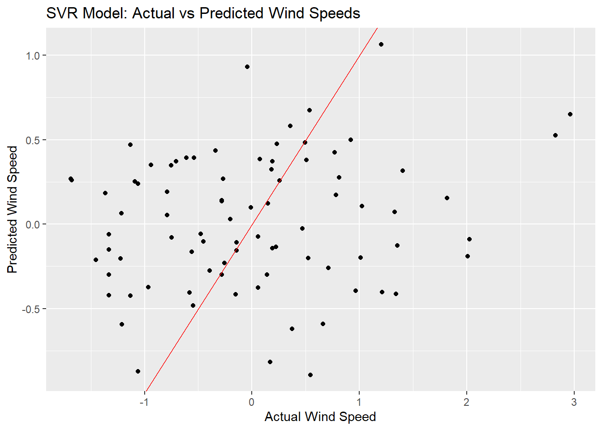
From the above plot. It can be seen that the model did not accurately capture the points as they do not fall along or close to the regression line.
#Decision Tree doesn't require feature scaling
#Building the model
DT_Wind = rpart(formula = WIND_SPEED ~ ., data = train_set,
control = rpart.control(minsplit = 2))
y_pred_DT <- predict(DT_Wind, test_set)
y_pred_DT## 2 4 5 8 11 13 16 20
## 2.311111 2.311111 3.365000 3.357000 3.955000 5.877500 3.955000 5.450833
## 21 22 24 25 26 31 32 33
## 3.365000 2.176667 5.450833 2.311111 6.600000 1.748182 1.748182 0.875000
## 34 37 50 53 58 59 61 65
## 5.380000 2.176667 0.875000 2.176667 1.982857 1.040000 3.438182 5.450833
## 67 68 69 71 73 82 84 87
## 3.357000 1.424545 5.450833 5.450833 3.955000 2.311111 5.450833 5.450833
## 88 89 94 97 104 106 107 111
## 5.450833 1.748182 1.748182 2.311111 5.450833 3.357000 3.357000 3.438182
## 114 115 118 126 130 132 133 134
## 3.357000 3.357000 5.215000 4.196364 3.357000 5.450833 5.450833 3.365000
## 136 137 138 139 145 150 151 167
## 4.196364 3.357000 3.357000 3.357000 5.380000 1.615000 1.615000 2.176667
## 173 174 175 179 181 183 189 190
## 5.450833 1.424545 1.424545 3.357000 3.375000 3.375000 1.424545 5.215000
## 193 195 198 202 206 214 216 219
## 1.040000 3.992857 3.992857 3.955000 6.900000 2.250000 2.250000 3.992857
## 220 222 223 224 229 230 238 240
## 3.992857 5.565000 5.565000 5.565000 2.176667 5.565000 1.748182 1.748182
## 242 246 248
## 3.992857 5.565000 2.250000# Calculate evaluation metrics
mae_DT <- mean(abs(test_set$WIND_SPEED - y_pred_DT))
mse_DT <- mean((test_set$WIND_SPEED - y_pred_DT)^2)
rmse_DT <- sqrt(mean((test_set$WIND_SPEED - y_pred_DT)^2))
r2_DT <- cor(test_set$WIND_SPEED, y_pred_DT)^2
# Print the evaluation metrics
print(paste("Mean Absolute Error (MAE):", mae_DT))## [1] "Mean Absolute Error (MAE): 1.44404096907109"print(paste("Mean Squared Error (MSE):", mse_DT))## [1] "Mean Squared Error (MSE): 3.38738894019642"print(paste("Root Mean Squared Error (RMSE):", rmse_DT))## [1] "Root Mean Squared Error (RMSE): 1.8404860608536"print(paste("R Squared (R2): ", r2_DT))## [1] "R Squared (R2): 0.119035999207337"#Create a scatterplot of actual vs predicted wind speeds
ggplot(test_set, aes(x = WIND_SPEED, y = y_pred_DT)) +
geom_point() +
geom_abline(intercept = 0, slope = 1, color = "red") + # Add diagonal line
labs(x = "Actual Wind Speed", y = "Predicted Wind Speed", title = "DT Model: Actual vs Predicted Wind Speeds")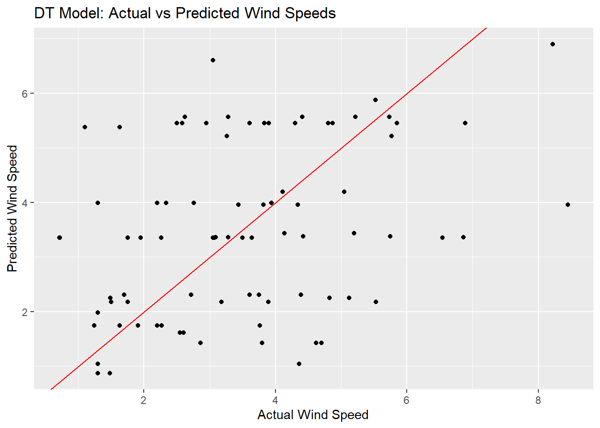
As seen from the figure above, just like the SVR, its points do not fall along the regression line. From the plot, this is a poor performing model
set.seed(1234) #Ensures reproducibility
RF_wind200 <- randomForest(x = train_set,y = train_set$WIND_SPEED, ntree = 200)
# Number of trees (500)
RF_wind500 = randomForest(x = train_set, y = train_set$WIND_SPEED, ntree = 500)#Testing the Random Forest Model on the test set
y_pred_RF200 = predict(RF_wind200, test_set)
y_pred_RF200## 2 4 5 8 11 13 16 20
## 3.913608 4.167978 5.611962 5.405715 6.733402 5.543069 3.728571 2.590226
## 21 22 24 25 26 31 32 33
## 3.086675 4.062254 2.886408 4.365439 3.154892 2.209606 2.196473 1.757358
## 34 37 50 53 58 59 61 65
## 1.757306 1.894355 1.428881 2.003251 1.432019 1.505005 4.218023 2.685042
## 67 68 69 71 73 82 84 87
## 1.897704 2.787681 4.758316 4.052881 4.249949 2.753548 6.018524 5.678838
## 88 89 94 97 104 106 107 111
## 4.956237 3.712235 1.457909 1.720113 3.960783 3.123889 3.178072 4.946592
## 114 115 118 126 130 132 133 134
## 1.941303 3.025526 3.025976 4.927974 3.770892 3.906635 3.650923 3.026831
## 136 137 138 139 145 150 151 167
## 4.144943 2.515238 1.821216 1.782113 1.849764 2.506864 2.617560 3.080223
## 173 174 175 179 181 183 189 190
## 4.285383 4.577974 4.556397 3.781193 4.427278 5.252203 4.020678 5.480378
## 193 195 198 202 206 214 216 219
## 4.360680 4.082834 2.570652 4.061203 6.468532 4.902157 2.189418 2.566054
## 220 222 223 224 229 230 238 240
## 2.435048 2.860418 4.814437 5.275627 5.300962 5.635571 1.902262 1.700850
## 242 246 248
## 1.879805 3.203623 4.981159View(test_set)y_pred_RF500 <- predict(RF_wind500, test_set)
y_pred_RF500## 2 4 5 8 11 13 16 20
## 3.765303 4.118135 5.541303 5.388613 6.847253 5.448367 3.813080 2.600294
## 21 22 24 25 26 31 32 33
## 3.133837 4.135418 2.905827 4.399816 3.302861 2.255830 2.242787 1.681286
## 34 37 50 53 58 59 61 65
## 1.652875 1.966709 1.386208 2.000034 1.428658 1.608671 4.152920 2.616896
## 67 68 69 71 73 82 84 87
## 1.823334 2.808379 4.712517 4.088421 4.271539 2.771156 5.862058 5.696339
## 88 89 94 97 104 106 107 111
## 4.968025 3.651047 1.517572 1.766159 3.927430 3.070859 3.081882 4.808749
## 114 115 118 126 130 132 133 134
## 1.841977 2.928508 3.058709 4.881677 3.686156 3.853764 3.674324 3.014836
## 136 137 138 139 145 150 151 167
## 4.158536 2.449217 1.850989 1.830009 1.732561 2.445284 2.544615 3.048773
## 173 174 175 179 181 183 189 190
## 4.291191 4.574443 4.566792 3.779561 4.377348 5.089523 4.000011 5.447188
## 193 195 198 202 206 214 216 219
## 4.350449 4.062522 2.628380 4.034232 6.439641 4.976699 2.243255 2.575934
## 220 222 223 224 229 230 238 240
## 2.483481 2.915343 4.864550 5.309169 5.232758 5.693330 1.879583 1.704246
## 242 246 248
## 1.877873 3.247585 5.012589# Calculate evaluation metrics for n = 200
mae_RF200 <- mean(abs(test_set$WIND_SPEED - y_pred_RF200))
mse_RF200 <- mean((test_set$WIND_SPEED - y_pred_RF200)^2)
rmse_RF200 <- sqrt(mean((test_set$WIND_SPEED - y_pred_RF200)^2))
r2_RF200 <- cor(test_set$WIND_SPEED, y_pred_RF200)^2
# Print the evaluation metrics for n = 200
print(paste("Mean Absolute Error (MAE):", mae_RF200))## [1] "Mean Absolute Error (MAE): 0.261388684738956"print(paste("Mean Squared Error (MSE):", mse_RF200))## [1] "Mean Squared Error (MSE): 0.192092643235467"print(paste("Root Mean Squared Error (RMSE):", rmse_RF200))## [1] "Root Mean Squared Error (RMSE): 0.438283747400547"print(paste("R Squared (R2): ", r2_RF200))## [1] "R Squared (R2): 0.955490709250913"# Calculate evaluation metrics for n = 500
mae_RF500 <- mean(abs(test_set$WIND_SPEED - y_pred_RF500))
mse_RF500 <- mean((test_set$WIND_SPEED - y_pred_RF500)^2)
rmse_RF500 <- sqrt(mean((test_set$WIND_SPEED - y_pred_RF500)^2))
r2_RF500 <- cor(test_set$WIND_SPEED, y_pred_RF500)^2
# Print the evaluation metrics for n = 500
print(paste("Mean Absolute Error (MAE):", mae_RF500))## [1] "Mean Absolute Error (MAE): 0.270336"print(paste("Mean Squared Error (MSE):", mse_RF500))## [1] "Mean Squared Error (MSE): 0.201838534963385"print(paste("Root Mean Squared Error (RMSE):", rmse_RF500))## [1] "Root Mean Squared Error (RMSE): 0.449264437679397"print(paste("R Squared (R2): ", r2_RF500))## [1] "R Squared (R2): 0.952551906459685"ggplot(test_set, aes(x = WIND_SPEED, y = y_pred_RF200)) +
geom_point() +
geom_abline(intercept = 0, slope = 1, color = "red") + # Add diagonal line
labs(x = "Actual Wind Speed", y = "Predicted Wind Speed", title = "RF Model (Trees = 200): Actual vs Predicted Wind Speeds")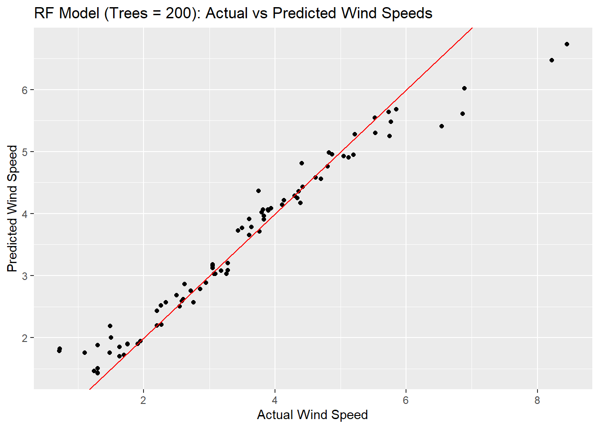
From the plot, the points on or around the regression line. This is the ideal requirement.
ggplot(test_set, aes(x = WIND_SPEED, y = y_pred_RF500)) +
geom_point() +
geom_abline(intercept = 0, slope = 1, color = "red") + # Add diagonal line
labs(x = "Actual Wind Speed", y = "Predicted Wind Speed", title = "RF Model (Trees = 500): Actual vs Predicted Wind Speeds")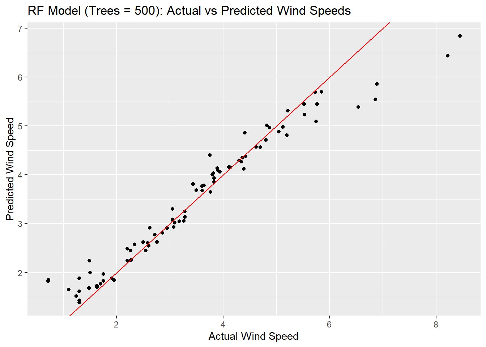
This is done to compare the different models based on their evaluation metrics.
# Create a dataframe with model names and evaluation metrics
models <- c("SVR", "Decision Tree", "Random Forest")
mse <- c(mse_svr, mse_DT,mse_RF200)
mae <- c(mae_svr, mae_DT, mae_RF200)
rmse <- c(rmse_svr, rmse_DT, rmse_RF200)
rsquared <- c(r2_svr, r2_DT, r2_RF200)
eval_df <- data.frame(Model = rep(models, each = 4),
Metric = rep(c("MSE", "MAE", "RMSE", "R-squared"), times = 3),
Value = c(mse, mae, rmse, rsquared))
# Create a grouped bar plot
ggplot(eval_df, aes(x = Model, y = Value, fill = Metric)) +
geom_bar(stat = "identity", position = "dodge") +
labs(title = "Comparison of Model Evaluation Metrics",
x = "Model", y = "Value") +
theme_minimal() +
theme(axis.text.x = element_text(angle = 45, hjust = 1))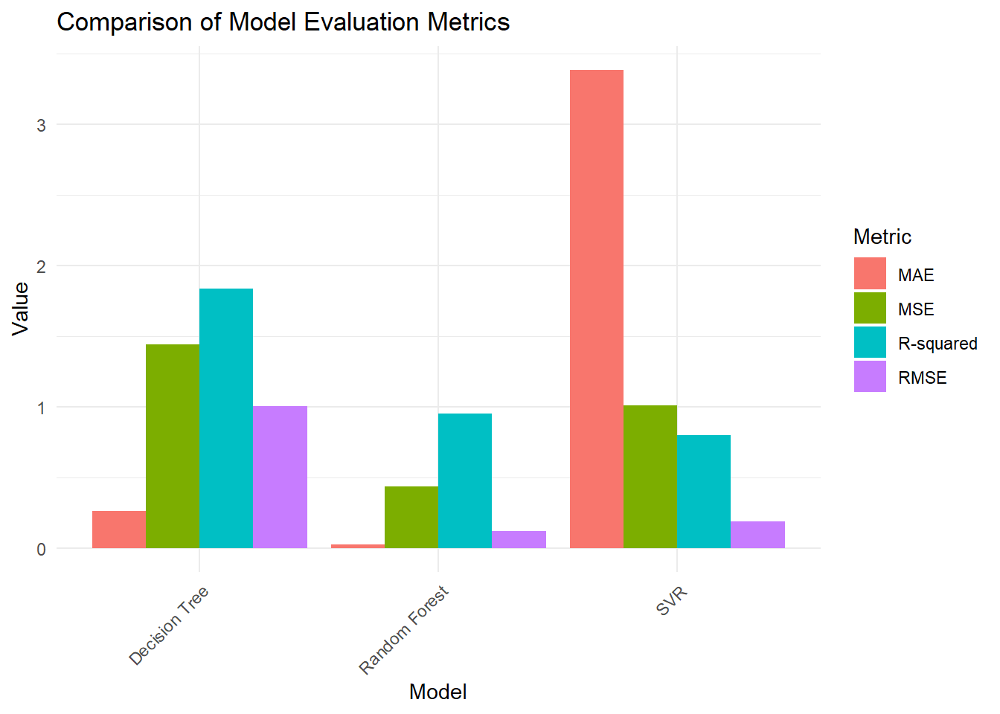
From the graph, it can be confidently said that the best model is the Random Forest regression model.
Creating a sample dataframe to test out the models
TSK <- c(298.30, 297.70, 305.50, 295.30)
Q2 <- c(0.011140, 0.003700, 0.007400, 0.004505)
RAINNC <- c(0.1, 4.2, 5.5, 6.2)
TSLB <- c(298.4, 283.50, 279.90, 295.60)
SMOIS <- c(0.31320, 0.40060, 0.31980, 0.32470)
WIND_SPEED <- c(5.5,6.5,4.2,3.5)
Model_test <- data.frame(TSK,Q2,RAINNC,TSLB,SMOIS,WIND_SPEED)
Test_prediction1 <- predict(Svr_Wind, Model_test)
Test_prediction1## 1 2 3 4
## 0.1736683 0.1736683 0.1736683 0.1736683View(Model_test)Test_prediction2 <- predict(DT_Wind, Model_test)
Test_prediction2## 1 2 3 4
## 5.565 3.955 3.955 6.900Test_prediction3 <- predict(RF_wind200, Model_test)
Test_prediction3## 1 2 3 4
## 5.296704 5.639182 4.964705 3.867882How can Surface temperature be predicted based on a combination of meteorological variables using machine learning techniques, given that Birmingham experiences the urban heat island effect and how does the predictive performance vary across different machine learning models?
data_sub1 <- data_weather[c("TSK", "PSFC", "Q2", "RAINNC", "WIND_SPEED","TSLB")]
glimpse(data_sub1)## Rows: 248
## Columns: 6
## $ TSK <dbl> 277.6, 276.3, 277.6, 287.4, 293.2, 287.4, 283.7, 281.7, 280…
## $ PSFC <dbl> 99325, 99313, 99300, 99255, 99163, 99071, 99018, 98863, 986…
## $ Q2 <dbl> 0.003770, 0.003540, 0.003800, 0.004085, 0.004370, 0.004790,…
## $ RAINNC <dbl> 0.0, 0.0, 0.0, 0.0, 0.0, 0.0, 0.0, 0.0, 0.2, 0.6, 4.1, 6.1,…
## $ WIND_SPEED <dbl> 3.86, 3.61, 2.24, 4.39, 6.86, 6.49, 6.68, 6.54, 6.60, 8.97,…
## $ TSLB <dbl> 278.90, 277.60, 277.30, 283.20, 289.40, 287.90, 284.80, 282…Model_PSFC <- PSFC ~ TSK + Q2+ RAINNC + WIND_SPEED + TSLB
#Fitting the model
Linear_PSFC <- lm(Model_PSFC, data = data_sub1)
raintest(Linear_PSFC)##
## Rainbow test
##
## data: Linear_PSFC
## Rain = 0.83572, df1 = 124, df2 = 118, p-value = 0.838set.seed(123) #Ensuring reproducibility
unique(colnames(data_weather))## [1] "TSK" "PSFC" "U10" "V10" "Q2"
## [6] "RAINC" "RAINNC" "SNOW" "TSLB" "SMOIS"
## [11] "DATETIME" "WIND_SPEED"#Getting the split
split1 = sample.split(data_sub1$TSK, SplitRatio = 0.8)
#Dividing into train and test set
train_set = subset(data_sub1, split == TRUE)
test_set = subset(data_sub1, split == FALSE)View(train_set)
View(test_set)
nrow(train_set) #Dsiplay the number of rows the train set## [1] 165# Applying feature Scaling
training_set = scale(train_set)
testing_set = scale(test_set)
#Building the model
Svr_TSK <- svm(formula <- TSK ~ ., data <- training_set,
type <- 'eps-regression')
# Predict wind speed on testing data
y_pred <- predict(Svr_TSK, testing_set)
y_pred## 2 4 5 8 11 13
## -1.632475082 -0.838205926 0.060620851 -0.939299192 -0.281696877 -0.102713426
## 16 20 21 22 24 25
## -0.353114970 -0.493872336 0.603332508 1.006787082 -0.456874490 -1.268795859
## 26 31 32 33 34 37
## -1.310554312 1.224842972 0.232061469 -0.988360885 -1.017845929 1.061537256
## 50 53 58 59 61 65
## -0.646422404 1.557507557 -0.301385880 -0.365333942 1.082187343 -0.695220175
## 67 68 69 71 73 82
## -1.026451755 -0.023543805 -0.192450047 -0.600612327 -0.950409418 -1.298563720
## 84 87 88 89 94 97
## -0.289198010 -0.200046991 -0.471559808 -0.811755166 -0.027132690 -0.771978955
## 104 106 107 111 114 115
## 0.169598532 -1.112337868 -1.134197477 0.730550460 -0.978520404 -1.038687641
## 118 126 130 132 133 134
## 1.928292700 -0.814915007 -1.251847955 -0.451135073 0.801099056 0.947823778
## 136 137 138 139 145 150
## -0.616794154 -1.013101642 -0.858710623 -0.803615214 -0.676115228 2.000901017
## 151 167 173 174 175 179
## 1.755658813 1.082959584 -0.177821877 0.372711864 0.364836963 -1.044372968
## 181 183 189 190 193 195
## 0.935691979 0.785928352 -0.009426943 1.165117860 -0.165011991 -0.554717395
## 198 202 206 214 216 219
## 0.009648216 -0.478764420 1.050909835 1.592182376 0.591026123 -0.305569311
## 220 222 223 224 229 230
## -0.191077450 1.787424420 1.813015633 0.990674824 0.893175305 1.227878630
## 238 240 242 246 248
## 0.064510374 -0.163835673 -0.419123878 1.494278166 0.910333806#Changing the scaled train and test set to dataframes
testing_set1 <- data.frame(testing_set)
training_set1 <- data.frame(training_set)# Calculate evaluation metrics
mae_svr <- mean(abs(testing_set1$TSK - y_pred))
mse_svr <- mean((testing_set1$TSK - y_pred)^2)
rmse_svr <- sqrt(mean((testing_set1$TSK- y_pred)^2))
r2_svr <- cor(testing_set1$TSK, y_pred)^2
# Print the evaluation metrics
print(paste("Mean Absolute Error (MAE):", mae_svr))## [1] "Mean Absolute Error (MAE): 0.272828637221568"print(paste("Mean Squared Error (MSE):", mse_svr))## [1] "Mean Squared Error (MSE): 0.124090734479886"print(paste("Root Mean Squared Error (RMSE):", rmse_svr))## [1] "Root Mean Squared Error (RMSE): 0.352265147977892"print(paste("Rsquared (RMSE): ", r2_svr))## [1] "Rsquared (RMSE): 0.874434013773486"This is done to visually assess how the SVR model performed.
#Create a scatterplot of actual vs predicted wind speeds
ggplot(testing_set1, aes(x = TSK, y = y_pred)) +
geom_point() +
geom_abline(intercept = 0, slope = 1, color = "red") + # Add diagonal line
labs(x = "Actual Surface Temperature", y = "Predicted Surface Temperature", title = "SVR Model: Actual vs Predicted Surface Temperature")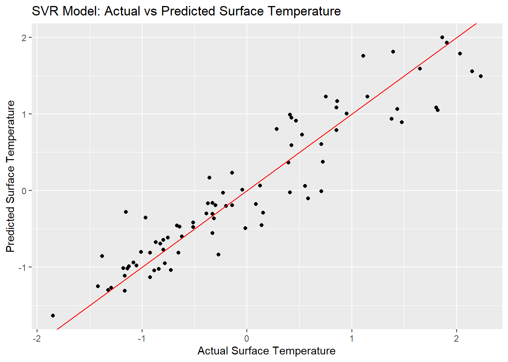
From the plot above, it can be seen that the all points fell around the regression line.
#Decision Tree doesn't require feature scaling
#Building the model
DT_TSK = rpart(formula = TSK ~ ., data = train_set,
control = rpart.control(minsplit = 2))
y_pred_DT <- predict(DT_TSK, test_set)
y_pred_DT## 2 4 5 8 11 13 16 20
## 281.2880 281.2880 288.8054 281.2880 281.2880 288.8054 285.1722 285.1722
## 21 22 24 25 26 31 32 33
## 288.8054 294.7000 285.1722 281.2880 281.2880 294.7000 288.8054 281.2880
## 34 37 50 53 58 59 61 65
## 281.2880 294.7000 285.1722 300.3519 291.7000 285.1722 300.3519 285.1722
## 67 68 69 71 73 82 84 87
## 281.2880 288.8054 288.8054 285.1722 285.1722 281.2880 288.8054 288.8054
## 88 89 94 97 104 106 107 111
## 285.1722 285.1722 291.7000 285.1722 288.8054 281.2880 281.2880 294.7000
## 114 115 118 126 130 132 133 134
## 281.2880 281.2880 300.3519 285.1722 281.2880 285.1722 294.7000 294.7000
## 136 137 138 139 145 150 151 167
## 285.1722 281.2880 281.2880 281.2880 285.1722 300.3519 300.3519 300.3519
## 173 174 175 179 181 183 189 190
## 288.8054 294.7000 294.7000 281.2880 294.7000 300.3519 288.8054 300.3519
## 193 195 198 202 206 214 216 219
## 288.8054 285.1722 288.8054 285.1722 300.3519 300.3519 294.7000 288.8054
## 220 222 223 224 229 230 238 240
## 288.8054 300.3519 300.3519 294.7000 294.7000 300.3519 288.8054 291.7000
## 242 246 248
## 285.1722 300.3519 294.7000# Calculate evaluation metrics
mae_DT <- mean(abs(test_set$TSK - y_pred_DT))
mse_DT <- mean((test_set$TSK - y_pred_DT)^2)
rmse_DT <- sqrt(mean((test_set$TSK - y_pred_DT)^2))
r2_DT <- cor(test_set$TSK, y_pred_DT)^2
# Print the evaluation metrics
print(paste("Mean Absolute Error (MAE):", mae_DT))## [1] "Mean Absolute Error (MAE): 2.22446769661226"print(paste("Mean Squared Error (MSE):", mse_DT))## [1] "Mean Squared Error (MSE): 7.70638651005212"print(paste("Root Mean Squared Error (RMSE):", rmse_DT))## [1] "Root Mean Squared Error (RMSE): 2.77603791581673"print(paste("R Squared (R2): ", r2_DT))## [1] "R Squared (R2): 0.843189915436262"#Create a scatterplot of actual vs predicted wind speeds
ggplot(test_set, aes(x = TSK, y = y_pred_DT)) +
geom_point() +
geom_abline(intercept = 0, slope = 1, color = "red") + # Add diagonal line
labs(x = "Actual Wind Speed", y = "Predicted Wind Speed", title = "DT Model: Actual vs Predicted Wind Speeds")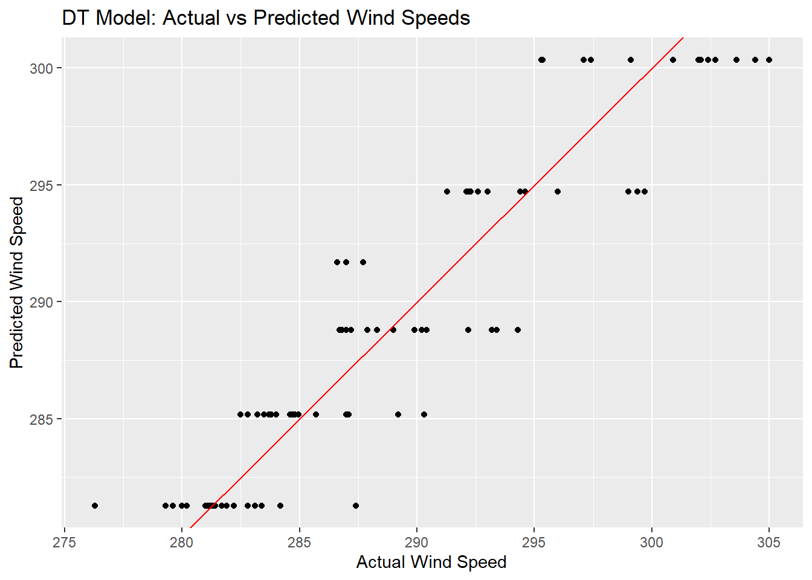
From the visualisation above, this is a not so good model.
set.seed(1234) #Ensures reproducibility
RF_wind200 <- randomForest(x = train_set,y = train_set$TSK, ntree = 200)
#Testing the Random Forest Model on the test set
y_pred_RF200 = predict(RF_wind200, test_set)
y_pred_RF200## 2 4 5 8 11 13 16 20
## 279.6261 285.2710 291.9363 281.7361 281.9305 292.1697 282.9170 287.4193
## 21 22 24 25 26 31 32 33
## 293.3176 295.4627 285.0837 281.3375 281.7660 295.2910 288.4408 282.5028
## 34 37 50 53 58 59 61 65
## 281.8434 297.6162 284.3429 301.0681 286.9227 286.8077 299.3886 283.7976
## 67 68 69 71 73 82 84 87
## 282.7937 291.0952 287.4950 284.8618 284.4555 280.5204 289.1256 287.7524
## 88 89 94 97 104 106 107 111
## 285.3956 283.5968 287.9204 283.7417 287.7813 281.4327 282.0526 294.2775
## 114 115 118 126 130 132 133 134
## 282.1349 283.6027 301.8145 284.6494 280.7506 288.0486 291.8242 292.7088
## 136 137 138 139 145 150 151 167
## 284.1303 281.6612 281.3964 282.3240 283.8800 301.9834 297.6454 296.4544
## 173 174 175 179 181 183 189 190
## 289.3794 294.3871 293.2384 282.9267 298.2222 296.6215 293.4859 297.1407
## 193 195 198 202 206 214 216 219
## 287.2491 286.6738 289.2866 285.8087 300.8879 301.3025 293.4778 287.0207
## 220 222 223 224 229 230 238 240
## 287.9231 302.4302 299.5148 294.3175 298.8566 297.7221 289.7351 287.6965
## 242 246 248
## 285.8839 301.7655 294.7476# Calculate evaluation metrics for n = 200
mae_RF200 <- mean(abs(test_set$TSK - y_pred_RF200))
mse_RF200 <- mean((test_set$TSK - y_pred_RF200)^2)
rmse_RF200 <- sqrt(mean((test_set$TSK - y_pred_RF200)^2))
r2_RF200 <- cor(test_set$TSK, y_pred_RF200)^2
# Print the evaluation metrics for n = 200
print(paste("Mean Absolute Error (MAE):", mae_RF200))## [1] "Mean Absolute Error (MAE): 0.851599297188751"print(paste("Mean Squared Error (MSE):", mse_RF200))## [1] "Mean Squared Error (MSE): 1.28739094159217"print(paste("Root Mean Squared Error (RMSE):", rmse_RF200))## [1] "Root Mean Squared Error (RMSE): 1.13463251389698"print(paste("R Squared (R2): ", r2_RF200))## [1] "R Squared (R2): 0.976821858581421"ggplot(test_set, aes(x = TSK, y = y_pred_RF200)) +
geom_point() +
geom_abline(intercept = 0, slope = 1, color = "red") + # Add diagonal line
labs(x = "Actual Wind Speed", y = "Predicted Wind Speed", title = "RF Model (Trees = 200): Actual vs Predicted Wind Speeds")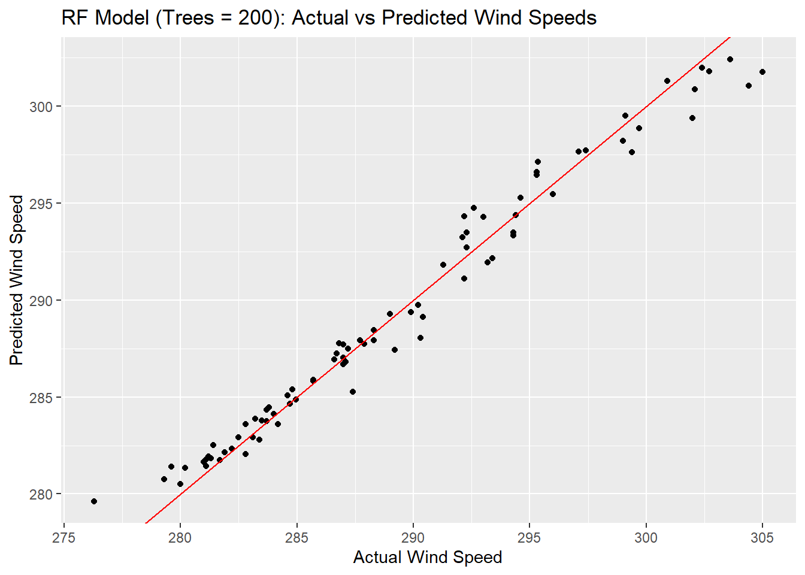
From the plot above, this is also a relatively good model
This is done to determine the best model
# Create a dataframe with model names and evaluation metrics
models <- c("SVR", "Decision Tree", "Random Forest")
mse <- c(mse_svr, mse_DT,mse_RF200)
mae <- c(mae_svr, mae_DT, mae_RF200)
rmse <- c(rmse_svr, rmse_DT, rmse_RF200)
rsquared <- c(r2_svr, r2_DT, r2_RF200)
eval_df1 <- data.frame(Model = rep(models, each = 4),
Metric = rep(c("MSE", "MAE", "RMSE", "R-squared"), times = 3),
Value = c(mse, mae, rmse, rsquared))
# Create a grouped bar plot
ggplot(eval_df1, aes(x = Model, y = Value, fill = Metric)) +
geom_bar(stat = "identity", position = "dodge") +
labs(title = "Comparison of Model Evaluation Metrics",
x = "Model", y = "Value") +
theme_minimal() +
theme(axis.text.x = element_text(angle = 45, hjust = 1))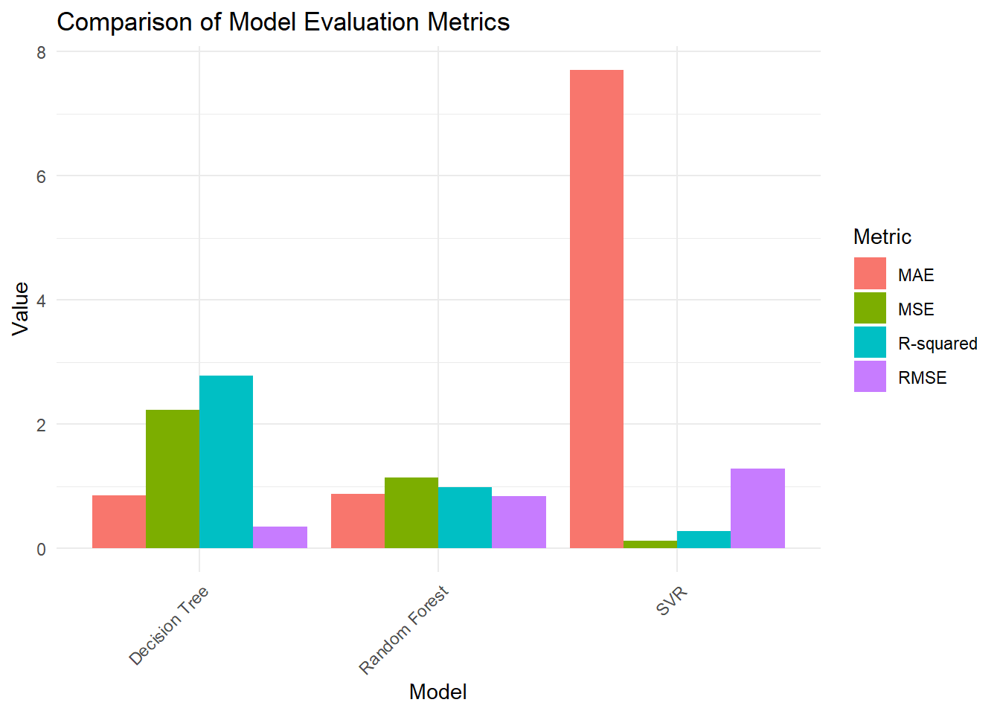
From the comparisons of the model, it cannot be outrightly decided what the best model is. The best model now is dependent on the evaluation metric that is under consideration, But overall, the Decision tree is seen as the worse model.
Time series analysis involves analyzing data that has a time component using specialized tools and techniques.
How does surface temperature vary over time, given that is important to stakeholders in Birmingham. Are there any trends or patterns and can the surface temperature for the next 24-hour period be forecasted?
str(data_weather)## 'data.frame': 248 obs. of 12 variables:
## $ TSK : num 278 276 278 287 293 ...
## $ PSFC : num 99325 99313 99300 99255 99163 ...
## $ U10 : num 3.3 3.5 2 3 4.1 3.6 1.9 0.7 0.2 1.1 ...
## $ V10 : num -2 -0.9 1 3.2 5.5 5.4 6.4 6.5 6.6 8.9 ...
## $ Q2 : num 0.00377 0.00354 0.0038 0.00409 0.00437 ...
## $ RAINC : num 0 0 0 0 0 0 0 0 0 0.05 ...
## $ RAINNC : num 0 0 0 0 0 0 0 0 0.2 0.6 ...
## $ SNOW : num 0 0 0 0 0 0 0 0 0 0 ...
## $ TSLB : num 279 278 277 283 289 ...
## $ SMOIS : num 0.312 0.31 0.309 0.307 0.306 ...
## $ DATETIME : POSIXct, format: "2018-05-01 00:00:00" "2018-05-01 03:00:00" ...
## $ WIND_SPEED: num 3.86 3.61 2.24 4.39 6.86 6.49 6.68 6.54 6.6 8.97 ...class(data_weather)## [1] "data.frame"#Getting the subset of our data required for the time series analysis
Time_df <- data_weather[c("TSK", "DATETIME")]
str(Time_df)## 'data.frame': 248 obs. of 2 variables:
## $ TSK : num 278 276 278 287 293 ...
## $ DATETIME: POSIXct, format: "2018-05-01 00:00:00" "2018-05-01 03:00:00" ...class(Time_df)## [1] "data.frame"#Converting the dataframe to a time series class
ts_data <- ts(Time_df$TSK,start = 1,
frequency = 8)
plot(ts_data)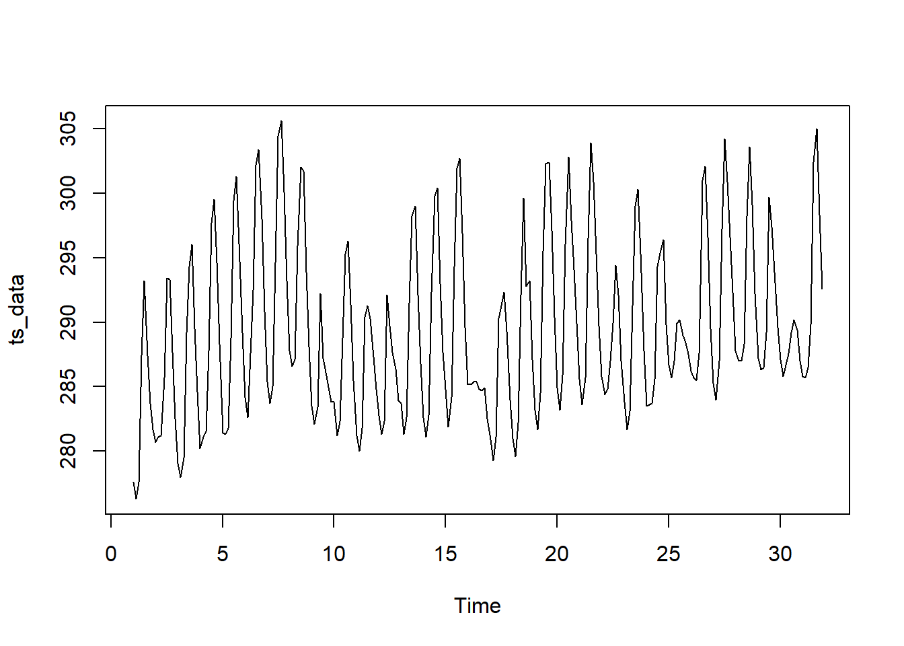
The plot above shows the trend of the surface tempearture across the 30 day time period.
Seasonal cycles, in the context of time series analysis, refer to recurring patterns in data that are tied to specific time periods within a year.
#Checking for seasonality
plot(decompose(ts_data))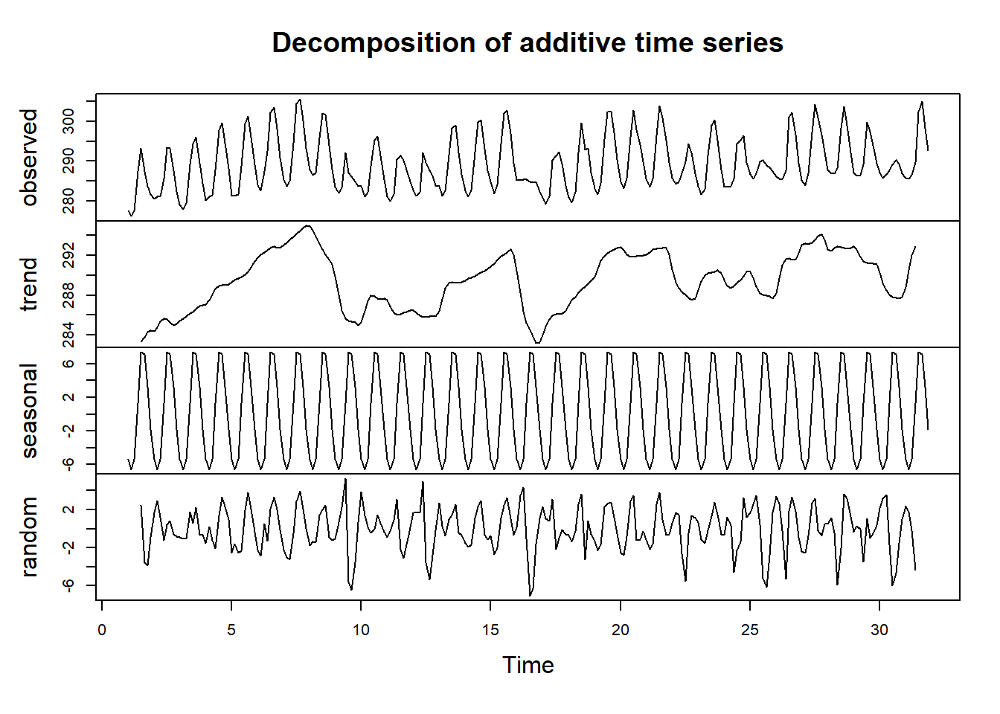
From the visualisation, the time series data displays a seasonal patttern.
Stationarity is a feature of time series data whereby its statistical attributes, such as mean, variance, and autocorrelation, remain consistent across time. In other words, a time series can be considered stationary if its statistical properties do not change with time.
To check for stationarity we use the Augmented Dickey-Fuller Test (ADF)
#Checking for Stationarity
adf.test(ts_data)##
## Augmented Dickey-Fuller Test
##
## data: ts_data
## Dickey-Fuller = -3.0499, Lag order = 6, p-value = 0.1339
## alternative hypothesis: stationaryThe p-value is greater than 0.05. This means we fail to reject the null hypothesis (H0). The null hypothesis is accepted meaning the data is non-stationary. But the time series needs to be sationary to carry out time series modelling. To rectify that we carry out differencing.
Differencing is a techniques that is used to transform a non-staionary time series to a stationary one.
#Implementing Differencing
ndiffs(ts_data) # No of differences required to make the data stationary## [1] 0nsdiffs(ts_data) #No of seasonal diiferences required to make the data stationary## [1] 1y1 <- diff(ts_data, lag = 8) # Implementing one seasonal differencing
adf.test(y1)## Warning in adf.test(y1): p-value smaller than printed p-value##
## Augmented Dickey-Fuller Test
##
## data: y1
## Dickey-Fuller = -6.2777, Lag order = 6, p-value = 0.01
## alternative hypothesis: stationaryThe p-values is less than 0.05. The null hypothesis is rejected. The data is now stationary.
Now we plot the differenced time series data to visually assess its stationarity.
plot(y1)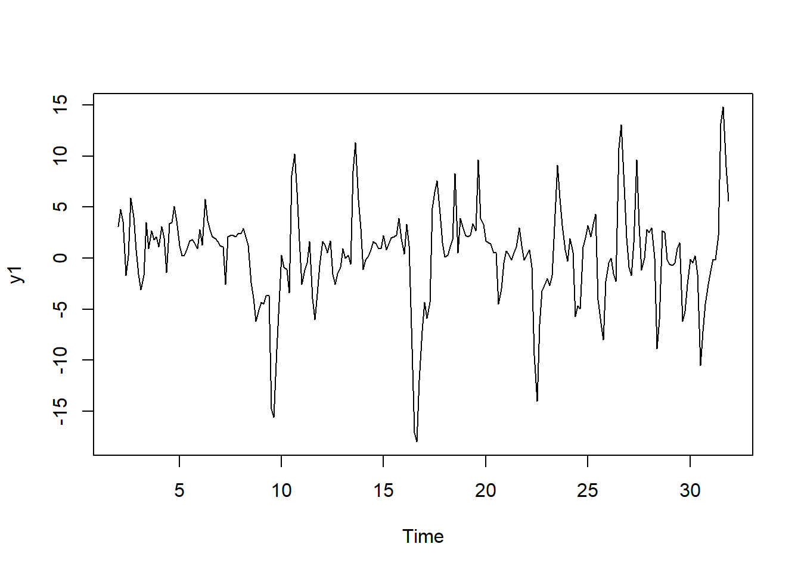
Since the data is seasonal, we would use seasonal ARIMA
#Splitting my time series data
split_ratio <- 0.8
# Calculate the number of observations for the training set
train_size <- floor(length(y1) * split_ratio)
# Split the data using indexing
train_data <- y1[1:train_size]
test_data <- y1[(train_size + 1):length(y1)]
length(train_data)## [1] 192length(test_data)## [1] 48#Autocorrelation Function Plot
acfplot <- acf(train_data)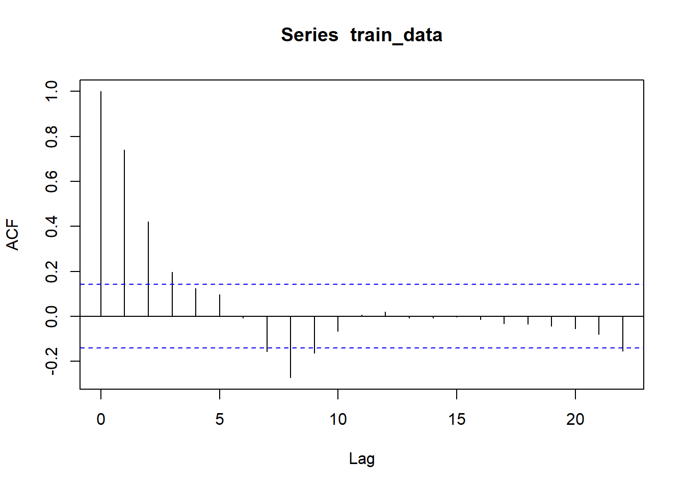
From the ACF plot, we can see that the lag spikes starts off strongly then gradually reduces to zero. There are four positive lag spikes that are beyond the reference blue dashed line. This means that there is a strong autocorrelation. All these spikes can serve as the q value.
#Partial Autocorrelation Plot
pacfplot <- pacf(train_data)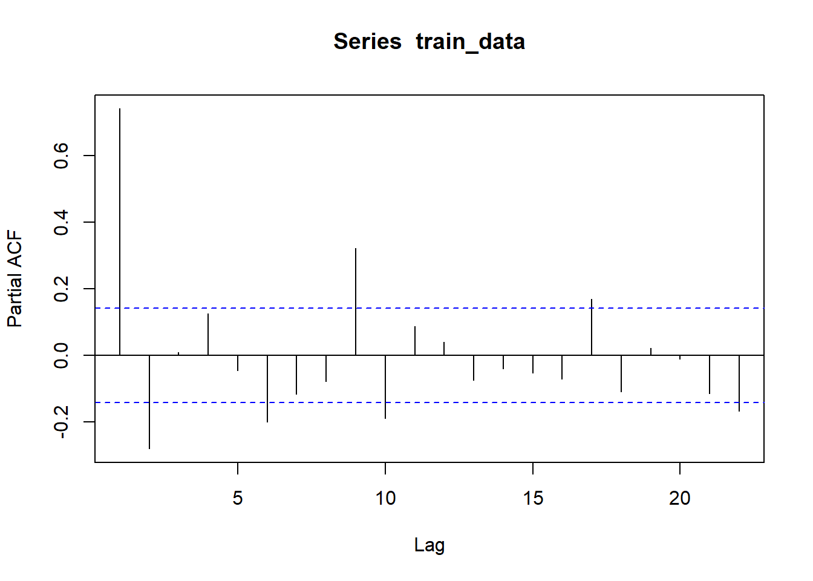
From the PACF plot, there is lag spike at lag 1 then another at lag 2. It shows the order of the Auto-Regressive terms.
#Fitting the seasonal arima model
sarima_model <- auto.arima(train_data, trace= TRUE, seasonal=TRUE, stepwise = FALSE, approximation = FALSE, allowdrift = FALSE)##
## ARIMA(0,0,0) with zero mean : 1123.906
## ARIMA(0,0,0) with non-zero mean : 1125.545
## ARIMA(0,0,1) with zero mean : 1004.82
## ARIMA(0,0,1) with non-zero mean : 1006.594
## ARIMA(0,0,2) with zero mean : 964.2608
## ARIMA(0,0,2) with non-zero mean : 966.1735
## ARIMA(0,0,3) with zero mean : 958.0449
## ARIMA(0,0,3) with non-zero mean : 960.0264
## ARIMA(0,0,4) with zero mean : 961.7668
## ARIMA(0,0,4) with non-zero mean : 963.7817
## ARIMA(0,0,5) with zero mean : 961.1939
## ARIMA(0,0,5) with non-zero mean : 963.2283
## ARIMA(1,0,0) with zero mean : 972.8999
## ARIMA(1,0,0) with non-zero mean : 974.8981
## ARIMA(1,0,1) with zero mean : 962.4474
## ARIMA(1,0,1) with non-zero mean : 964.4349
## ARIMA(1,0,2) with zero mean : 959.6343
## ARIMA(1,0,2) with non-zero mean : 961.6273
## ARIMA(1,0,3) with zero mean : 953.804
## ARIMA(1,0,3) with non-zero mean : 955.7752
## ARIMA(1,0,4) with zero mean : Inf
## ARIMA(1,0,4) with non-zero mean : 954.7241
## ARIMA(2,0,0) with zero mean : 960.0354
## ARIMA(2,0,0) with non-zero mean : 961.9916
## ARIMA(2,0,1) with zero mean : 962.1169
## ARIMA(2,0,1) with non-zero mean : 964.0964
## ARIMA(2,0,2) with zero mean : 961.702
## ARIMA(2,0,2) with non-zero mean : 963.7124
## ARIMA(2,0,3) with zero mean : 954.0464
## ARIMA(2,0,3) with non-zero mean : 956.0326
## ARIMA(3,0,0) with zero mean : 962.1124
## ARIMA(3,0,0) with non-zero mean : 964.0929
## ARIMA(3,0,1) with zero mean : 963.9822
## ARIMA(3,0,1) with non-zero mean : 965.9785
## ARIMA(3,0,2) with zero mean : Inf
## ARIMA(3,0,2) with non-zero mean : Inf
## ARIMA(4,0,0) with zero mean : 961.182
## ARIMA(4,0,0) with non-zero mean : 963.2248
## ARIMA(4,0,1) with zero mean : 963.2293
## ARIMA(4,0,1) with non-zero mean : 965.2943
## ARIMA(5,0,0) with zero mean : 962.9709
## ARIMA(5,0,0) with non-zero mean : 965.0308
##
##
##
## Best model: ARIMA(1,0,3) with zero meansarima_model## Series: train_data
## ARIMA(1,0,3) with zero mean
##
## Coefficients:
## ar1 ma1 ma2 ma3
## -0.7891 1.7966 1.2845 0.4802
## s.e. 0.0791 0.1133 0.1447 0.0551
##
## sigma^2 = 8.034: log likelihood = -471.74
## AIC=953.48 AICc=953.8 BIC=969.77forecast1 <- forecast(sarima_model, h=length(test_data))
forecast1## Point Forecast Lo 80 Hi 80 Lo 95 Hi 95
## 193 -3.954529e-01 -4.028388 3.237483 -5.951548 5.160642
## 194 5.623788e-01 -4.594103 5.718860 -7.323779 8.448537
## 195 1.017171e-01 -5.352775 5.556210 -8.240209 8.443644
## 196 -8.026635e-02 -5.545396 5.384864 -8.438462 8.277929
## 197 6.333926e-02 -5.408404 5.535083 -8.304971 8.431649
## 198 -4.998186e-02 -5.525840 5.425876 -8.424584 8.324620
## 199 3.944136e-02 -5.438977 5.517860 -8.339076 8.417959
## 200 -3.112371e-02 -5.511136 5.448888 -8.412079 8.349831
## 201 2.456014e-02 -5.456444 5.505564 -8.357912 8.407033
## 202 -1.938074e-02 -5.501003 5.462241 -8.402798 8.364037
## 203 1.529360e-02 -5.466713 5.497300 -8.368712 8.399299
## 204 -1.206839e-02 -5.494314 5.470178 -8.396440 8.372303
## 205 9.523326e-03 -5.472872 5.491919 -8.375077 8.394123
## 206 -7.514985e-03 -5.490003 5.474973 -8.392257 8.377227
## 207 5.930176e-03 -5.476616 5.488476 -8.378900 8.390761
## 208 -4.679581e-03 -5.487261 5.477902 -8.389565 8.380206
## 209 3.692721e-03 -5.478912 5.486297 -8.381227 8.388612
## 210 -2.913976e-03 -5.485532 5.479704 -8.387855 8.382027
## 211 2.299458e-03 -5.480328 5.484926 -8.382655 8.387254
## 212 -1.814533e-03 -5.484447 5.480818 -8.386777 8.383148
## 213 1.431872e-03 -5.481204 5.484068 -8.383536 8.386400
## 214 -1.129910e-03 -5.483768 5.481508 -8.386101 8.383841
## 215 8.916270e-04 -5.481748 5.483531 -8.384081 8.385865
## 216 -7.035949e-04 -5.483344 5.481936 -8.385678 8.384271
## 217 5.552162e-04 -5.482085 5.483196 -8.384420 8.385530
## 218 -4.381286e-04 -5.483079 5.482203 -8.385414 8.384537
## 219 3.457332e-04 -5.482295 5.482987 -8.384630 8.385322
## 220 -2.728227e-04 -5.482914 5.482368 -8.385249 8.384703
## 221 2.152881e-04 -5.482426 5.482856 -8.384761 8.385191
## 222 -1.698867e-04 -5.482811 5.482471 -8.385146 8.384806
## 223 1.340599e-04 -5.482507 5.482775 -8.384842 8.385110
## 224 -1.057885e-04 -5.482747 5.482535 -8.385082 8.384870
## 225 8.347911e-05 -5.482558 5.482725 -8.384893 8.385060
## 226 -6.587449e-05 -5.482707 5.482575 -8.385042 8.384910
## 227 5.198245e-05 -5.482589 5.482693 -8.384924 8.385028
## 228 -4.102005e-05 -5.482682 5.482600 -8.385017 8.384935
## 229 3.236947e-05 -5.482609 5.482674 -8.384944 8.385009
## 230 -2.554319e-05 -5.482667 5.482616 -8.385002 8.384951
## 231 2.015647e-05 -5.482621 5.482661 -8.384956 8.384996
## 232 -1.590575e-05 -5.482657 5.482625 -8.384992 8.384960
## 233 1.255144e-05 -5.482629 5.482654 -8.384964 8.384989
## 234 -9.904509e-06 -5.482651 5.482631 -8.384986 8.384966
## 235 7.815781e-06 -5.482634 5.482649 -8.384968 8.384984
## 236 -6.167538e-06 -5.482647 5.482635 -8.384982 8.384970
## 237 4.866888e-06 -5.482636 5.482646 -8.384971 8.384981
## 238 -3.840527e-06 -5.482645 5.482637 -8.384980 8.384972
## 239 3.030611e-06 -5.482638 5.482644 -8.384973 8.384979
## 240 -2.391496e-06 -5.482644 5.482639 -8.384979 8.384974The ARIMA(1,0,3) is chosen as the best model because it has the lowest AIC value. AIC stands for Akaike Information Criterion. It’s a statistical method used for model selection. Models with lower AIC values are generally considered preferable. They achieve a good balance between fitting the data and being not overly complex.
#Checking accuracy
sarima_acc <- accuracy(forecast1, test_data)
sarima_acc## ME RMSE MAE MPE MAPE MASE ACF1
## Training set 0.07910448 2.804788 1.885204 -Inf Inf 0.8450458 0.04032264
## Test set 0.86408795 5.414613 3.684651 -Inf Inf 1.6516505 NAsummary(sarima_model)## Series: train_data
## ARIMA(1,0,3) with zero mean
##
## Coefficients:
## ar1 ma1 ma2 ma3
## -0.7891 1.7966 1.2845 0.4802
## s.e. 0.0791 0.1133 0.1447 0.0551
##
## sigma^2 = 8.034: log likelihood = -471.74
## AIC=953.48 AICc=953.8 BIC=969.77
##
## Training set error measures:
## ME RMSE MAE MPE MAPE MASE ACF1
## Training set 0.07910448 2.804788 1.885204 -Inf Inf 0.8450458 0.04032264The “accuracy” and “summary” commands displays the various evaluation metrics of the model. This includes, Mean Absolute Error, Root Mean Squared Error etc.
#Checking the residuala
checkresiduals(sarima_model)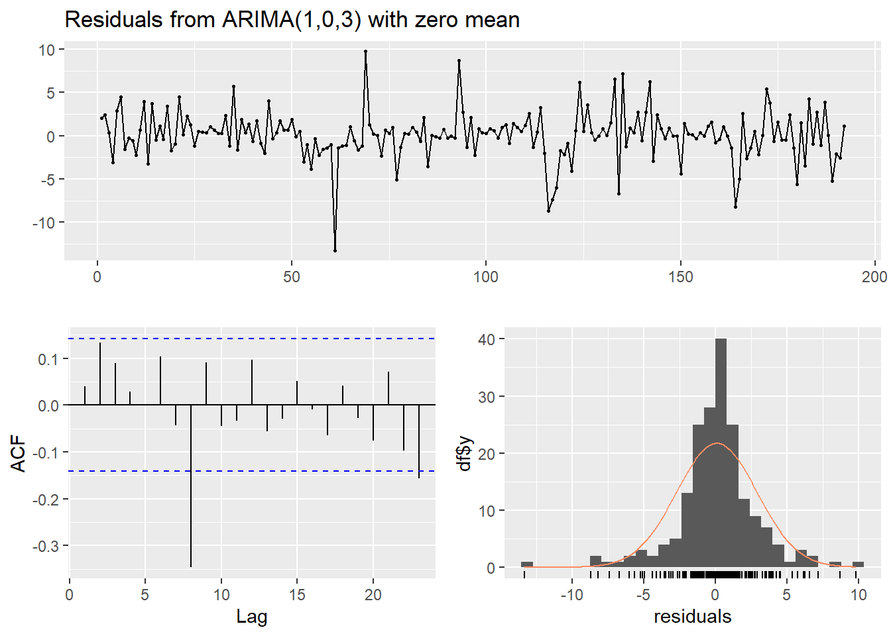
##
## Ljung-Box test
##
## data: Residuals from ARIMA(1,0,3) with zero mean
## Q* = 34.446, df = 6, p-value = 5.516e-06
##
## Model df: 4. Total lags used: 10After checking the residuals, a p-value of less than 0.05 was obtained, indicating the possible presence of autocorrelation (dependence) in the residuals. This suggests that the null hypothesis (no autocorrelation) can be rejected, meaning there is evidence of remaining autocorrelation in the residuals.
After analysing the ACF plot, it is evident that there is still a presence of two single significant spike. This indicates that there is still autocorrelation in the errors. Essentially, it means that the model is not making use of all the available data points.
To rectify this, we will conduct another seasonal ARIMA on the entire time series data instead of splitting it into train and test data.
acf(y1)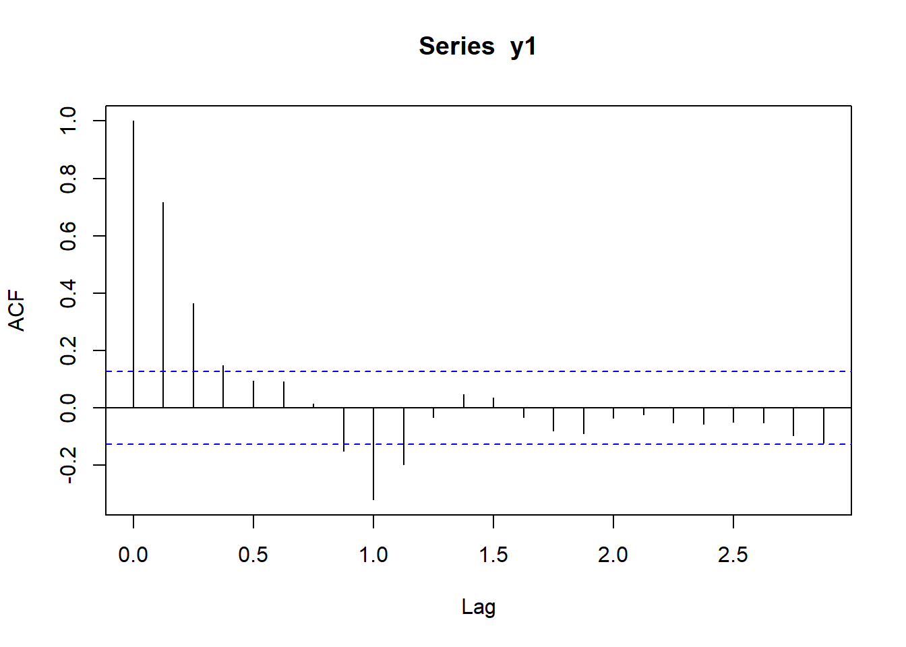
pacf(y1)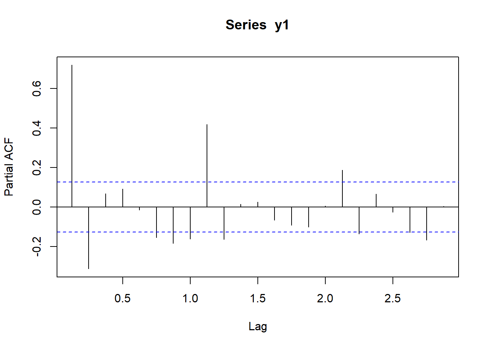
#Fitting a new SARIMA model
new_sarima <- auto.arima(y1, stepwise = FALSE, approximation = FALSE)summary(new_sarima)## Series: y1
## ARIMA(3,0,1)(0,0,1)[8] with zero mean
##
## Coefficients:
## ar1 ar2 ar3 ma1 sma1
## 1.6764 -1.0401 0.3056 -0.6548 -0.8240
## s.e. 0.1744 0.1790 0.0646 0.1752 0.0487
##
## sigma^2 = 5.767: log likelihood = -553.05
## AIC=1118.1 AICc=1118.46 BIC=1138.98
##
## Training set error measures:
## ME RMSE MAE MPE MAPE MASE ACF1
## Training set 0.2108708 2.37632 1.620509 NaN Inf 0.3164896 -0.0084813Although the the AIC value is just a little higher than the first SARIMA, it doesn’t mean its a worse model. To determine its validity, we check the residuals.
checkresiduals(new_sarima)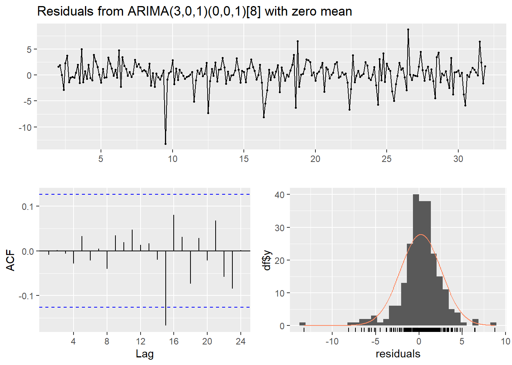
##
## Ljung-Box test
##
## data: Residuals from ARIMA(3,0,1)(0,0,1)[8] with zero mean
## Q* = 11.141, df = 11, p-value = 0.4315
##
## Model df: 5. Total lags used: 16From the Ljung-Box test, the p-value is greater that 0.05. This suggests a weaker presence of autocorrelation compared to a p-value less than 0.05.
After analysing the residuals, it is evident that the ACF displays only one significant lag spike beyond the reference line. This indicates that the model is utilising most of the data points.
#Forecasting
plot(forecast(new_sarima, h = 10))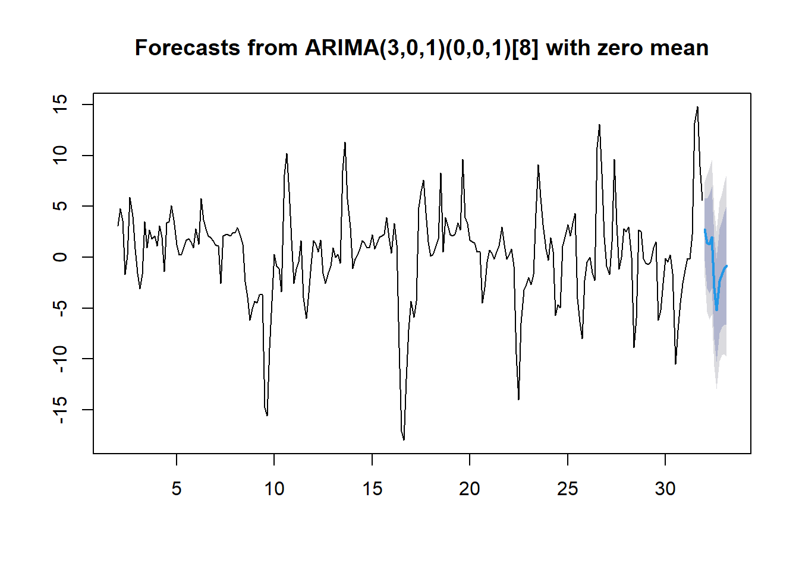
The most significant limitation arising from this analysis is the restricted number of observations. A small dataset presents substantial challenges, especially when employing machine learning techniques and time series forecasting. When there are only a few data points, the machine learning model may become too focused on the specific details of the training data. This can result in overfitting, where the model works well with the training data but struggles to accurately predict outcomes with new, unseen data.
After completing the analysis, we discovered some interesting insights and patterns. For example, our analysis revealed that an increase in humidity led to higher rainfall, while surface pressure and temperature exhibited an inverse relationship. All of these findings were obtained through simple statistical tests in multivariate analysis. Improving on our analysis, we used machine learning techniques and algorithms to uncover hidden patterns and make predictions based on historical data. By training models on past weather observations, we developed predictive capabilities that can forecast future conditions with reasonable accuracy. These machine learning models are valuable tools for stakeholders, providing insights into potential weather events and supporting decision-making processes